Good excretory system - For a happy life
(Tips for a satisfying life - 7)
Protect your
Health,
Experience wealth
All the time
Dr.Manthena satyanaraya raju
Index
Dedicated to
I'm dedicating this book to the most wonderful woman, who spent her life in spreading good word about naturopathy, she is an ideal to all the women in the state, "she turned her life into a valualble message",multitalented womenDr. SaraswathiraoI am proudly dedicating it to her.
- Dr.Manthena satyanarayanaraju
Seva saraswathi
(Life story of Dr.C.saraswathi rao garu)
She was about to commit suicide due to illnesses when she was 30 years.Now she is 88 years old confident, independent and does her work very actively and is helping many patients in getting rid of diseases.She is a social worker, naturopathic doctor and a very strong woman who is serving mankind selflessly since past 6 decades."Inorder to improve things around us and leading a satisfactory life without helping others is not possible" she described her life secret in these words.According to her 3 things help us in leading a happy life. They are: Fulfilling your duties, helping others, making proper use of free time.
She is a very straight forward women who expresses her thoughts without any hesitation but she is a very sensitive women.She arrives first incase of any emergency to the community and spends every penny of her earnings for the benefit of fellow human.She even raised funds to help people.She takes it as a responbility when someone comes to her with a illness or when she feels someone is sick.Her husband Dr.C.B.Rao helps her in this.
She was born in an orthodox family of rajhmundry, east godavari district.She has very unique personality, she went against the will of her family to persue higher studies in kakinada.She even married a man who doesn't belong to her community against the will of her family.She met Dr.C.B.rao in kakinada where she was studying her intermediate, he is a biology lecturer in that college.This lead to her love marriage.Dr.c.b.rao retired as state health director and died in july last year.She got mentally disturbed by the demise of her husband , but she recovered quickly and spent more time in social service from then.She donated her house worth of almost 50 lakhs to redcross inorder to build blood bank with advanced technology.
Her mother , chalapalli sithadevi is a naturopathic doctor, she inspired saraswathi in being a doctor.She used to provide free medical help to people and also help women without any shelter by providing them work.She provided scholarships and medals to people who are pursuing occupational courses in many state affliated colleges.Actually the feild she was serving for 6 decades now was started by chance.
When a boy who visited there yoga centre along with his family fell into the well, she jumped into it and saved him by providing primary aid, she was awarded a medal by the central government for her act of bravery.Since then she was awarded 55 medals for her service to mankind.She accompanied her husband to london in 1946, where he pursued his ph.D. She used to serve sick people in the hospitals nearby.She returned to india with her husband after 3 years and was suffering from chronic illnesses like joint pains.No medicine helped her and she was fed with that miserable life and wanna commit suicide.She even wrote a letter "My mothers face flashed infront of me as if she was telling me this idea is wrong.I felt like i should try the naturopathy which my mom practised throughout her life" saraswathi rao shared her past experiences with us.
She turned healthy in just a week.She understood that using naturopathic techniques and making necessary changes in life can improve quality of ones life. Home makers used to assemble everyday at a spot and learnt yoga techniques, naturopathy, advanced child rearing techniques, they used to teach illiterate women. She then till july last year she used her house as a yoga and naturopathic centre. "She worked hard that any one suffering from any disease should get cured in a week with naturopathy, naturopathy never disappointed her in this" she conveyed this with utmost confidence.
You need to help yourselves inorder to be healthy is her first book in english based on living using naturopathic techniques.She told the people who come to her about the importance of blood donation.She organised blood donation camps in association with red cross.She made 40k families to donate blood till now.She donated her house in vidyanagar hyderabad to redcross so that they can build an advanced lab that can seperate blood and its components.
"There are no one in this current generation who dedicated their life and everything else for the benefit of society.
Multiple services
The service done by her is inmeasurable, she served people without expecting any help from others.
Naturopathy: She cured many diseased people with naturopathic techniques.
Love towards environment: She was veryt fond of nature and its beauty, she used to spread among people the importance of growing plants.
Literacy: She used to convey the importance of education to poor women and especially women, she used to teach poor house wives to read and write.
Blood donation: After noticing the importance of blood donation she almost made 40000 families to donate blood and also turned his house into blood donation camp by giving it.
Positive thinking:According to her there are only three ways of leading a happy life, they are fulfilling duties, helping people who are needy and making good use of free time.
Broadminded:She donated her mangalsutra when her husband is alive, she also donated many gold, silver and other valuable things to poor people and orphanages.
Writer: "Help yourself to be healthy" book written by her in english tells about the art of living life in a natural way. She translated four other books along with this book.
This kindhearted women servicing mankind'effortlessly even at very old age is praised by the nation, she is an ideal to many people.I pray that everyone should help her in acheiving her dreams, i'm dedicating by book to this great human being.
Dr.Manthena satyanarayanaraju
Appreciation
"Jeetham sarvam jeethe rase"You can win anything if you have control over your tongue "sarva roga malashraynthi" Every disease arises from large intestine, this is told by our ancestors. These 2 words look correct if you read the above mentioned book.Many people in our country are suffering from constipation because the can't control their cravings. In maharastra a person sit under a bridge to excrete, he sat their for half an hour straining, then a person came on the bridge excreted and left in a movement, it fell on the person below the bridge but he instead of getting angry laughs due to happiness as a sign of congralutating him.In my childhood, i used to travel between cities on bullock cart.I never rode it, i always sat behind and observe how the ox excrete in a second and walk away,The dung used to not stick. If the dung sticks then ragavaraju use to say it is sick.He used to say
"Humans should excrete just like these oxes"I understood the truth behind it after studying Dr.manthenas books.
I read a small booklet written by dr.manthena in my friend proffesor shri ramaraju garu's house 2 years back.I visited the naturopathic clinic of doctor in jubilee hills. My imagination about how he looks and his dressing got changed, i thought the doctor might be like me dark, tall , wearing dhoti and may be wearing a nama on his forehead. But his age is half of what i thought. He was fair,looks like a hero wearing a shirt, pant, boots, he sat on stool with water bottle and cardless phone next to him, i got shocked. The patients are male,female, old and young, employees, businessmen, political people and doctors.I meet few patients and asked about their experience and learnt about few books he wrote like 1) Tips for a satisfying life 2)Food and thought 3)Fasting rules 4) Health and happiness and bought them. I listned to his speeches on sundays while reading his books. I read all these books in a months time, i felt surprised and happy. Its not something we read casually, they are scientific books. I felt amazed think that how did this young man wrote all these books.Amusements is because the doctor is opposite of my imagination.Happiness is because it cured people.I felt that it would help many people if they are translated to hindi and english.
After reading all these books of dr.manthena i felt that he is the human born to change the naturopathic medicine. Since then i got close to him and his family. Dr.vishala and Dr.manthena satyanarayana raju are an ideal couple. There qualities like always supporting the right thing, Discipline,control and dedication are the main reasons why they into social service and health care. I recently read 2 books of dr.manthena on water and good excretion, scientific things are written in a simple and easy to understand language,i believe that everything written their is based on experience. You may feel it funny at someplaces. It can be read by patients, normal people,doctors and gain good understanding on naturopathy.The ancient ayurvedic science was invented by saints,the great people who invented modern medical techniques also belong to this group.Dr.Manthena satya narayana raju also includes in them.
Our ancestors research about what is a disease?Why does it occur? They described this as"Rogastu dosavayshamam, Doshasamya marogatha" Disease occur when three reactions increase beyond limits, health is when they maintain a homeostastis.Susrutha described this in detail.
He said that"Samadosha samagnicha samadathu malakriya
Prasannathemdriyana svastha ithyabhdiyathe" (Rule no. XV -41)
- 3 reactions (Mucous,edema,pithamulu)
- Triggers (Gastrtis,Dhatvagni,earthquake)
- 7 substances in the body (fluids,blood,flesh,intelligence, sex organs and their secretions)
- Excretion
When all these things are perfect, this is called health. Doctors these days understand the meaning of only half of the shlok, as they are visible to eye and are related to our body.The remaining half is understood only by few, only saints understood the complete meaning of it. Even doctors and patients knew meaning of the first half of it, the last topic of the other half , excretion is clearly described in this book in 26 chapters.Why does excretory system gets worst is told clearly by charakudu "Midhyaahara viharabhyam doosa amashayatha" was clearly described by doctor in this book.
They didn't tell where can we use human faeces. Noone ever told the use of human faeces. This book is completely about excretion, it is a very good book. We are thinking that this junk eating is the sign of modern world and we are inviting constipation and other diseases on their own. If we can control this 90% of people suffering can get back to a normal life. Remaining 10% population like me spend time thinking that we get the result of our past life deeds and spend time praying god.
I would like to thank Dr.Manthena and Dr.vishala for writing this book for the benefit of humans and i pray to god that he provides them with good health and help them serve people.
Prof. B. Ramaraju
National Research Professor,
Head of the Department of Telugu,
Osmania University
Date: 6-6-2001,
1-8-117/2, Chikkadapally
Hyderabad - 500020
Phone : 7661034
Report
Human life is filled with happiness, every one try their way inorder to attain this happiness. Illness is coming in his way, humans are trying hard to overcome these illness but they are not getting good results in health. The reason is that both doctors and patients are not aware about things completely "Large intestine is the reason for all these diseases" tells our ayurvedic medicine.By this we understood that faeces are responsible for all the diseases we get. We want health by expelling it, even though we add anything externally we need to have good excretion inorder to stay happy. Constipation is the never endig problem to humans these days.If this gets cured remaining problems get cured easily. There are no proper methods to cure constipation yet.This book is written so that it can help people to overcom this problem,'Good excretion - for a happy life' helps us in acheiving this.
In my experience i saw many people getting cured who came to me with this problem and are happy. I wrote this book by practising these techniques on my own , understanding the benefits so that everyone can benefit through this book 'Good excretion- For a happy life'.Many people wrote many books on wide variety of topics but there is no such book which described constipation on such great detail. Many may think it is a very bad thing why to write on this. Inorder to fill the gap i aimed to write this book since 2-3 years, but i can't write due to lack of time. Inorder to make people aware of this i gave many speeches till date. Many people used to feel why is he talking shitty things. Even though i felt weird talking about it but it is the main problem in the society so i have to talk about this.Many people used to attend this as the problem is vast. People who attended my speeches understood the matter and got rid of it. Inorder to cure this disease in people who can't attend my speeches i wrote this book "Good excretion - For a happy life" To provide scientific knowledge on this matter.
You can gain the benefit only if you practise the good things you learnt. So in this book i turned everything simple, so that you can easily practise.Inorder to gain the benefits every person should as student and remain healthy.
- Manthena satyanarayanaraju
Acknowledgement
Writing a book is like performing a yaga.If this is related to medicine the responsibility further increases.We need to be efficient and get good support.I aimed to write 4 books in a single, inorder to make my dream real many people worked hard, i will never forgive their help. I would like to thank shri gokaraju gangaraju garu ,M.D. laila group of companies for providing us with good accomodation on the banks of krishna river and took good care of us for a month in this hot sumer and stayed as my biggest support in completing this book.
Professor,Birudu raju ramaraju has given me good suggestions and helped me by making neccessary changes and writing the foreword,
Shri turumella koteshwar rao garu has come forward on his own to proof read my book,
Mr.Vakada Durga rao helped me by providing fare copies while i am writing,
I would like to thank the management and the staff of the printing press who considered this as their own work and finishd it in time and special thanks to shri shivaji raju garu.
I would like to thank the readers for following these tips and giving reviews by mail and phone calls, thank you for staying as my biggest support.
6-6-2001
Vijayawada
Manthena satyanarayanaraju
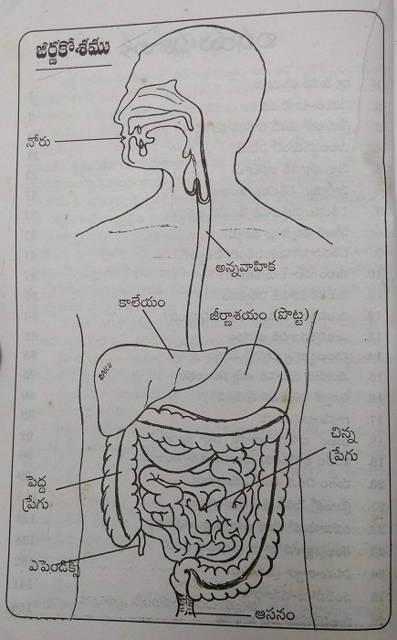
1.My thoughts
- Listen to my words carefully - Excrete wastes every day
- Don't forget it is harmful- Its good when you excrete properly
- Storing faeces is a disease- Its better if you excrete it on time
- The result of these experiment - You will get rid of these stored faeces
- You should excrete thrice a day - Everyone should understand this
- My aim is to share my experiences - This book is written based on my own practice
Human beings tend to listen good things, they can't really focus on bad things.They experience happiness by listening to good things.On the other hand they feel shy and irritated to talk about few things like faeces, excretion etc.In reality faeces is bad, talking about it is bad.We humans have no need to think about it or talk about it.But that is when your system is clean and all your excretory wastes are expelled on time.With increasing modernisation, humans are eating food but are not able to excrete it.Even though they are facing troble excreting they are not discussing it openly or seeking help due to awkwardness or shy.They are tolerating it as long as they can and seeking help once it is severe.These people feel very unpleasant and nauseating talking about it.
All human beings are aware about filling their stomach when they are hungry but noone is bothered about emptying it.Every other organism is aware of this.There is no special need for people like me or some doctor or its parent to teach them.But we humans we are not aware untill some one from outside had to teach us.Many people in our community are facing this problem and there is every need to address this problem.Inorder to talk about excretory system and faeces i can't just skip that uncomfortable word.People who are fond of health should never consider faeces and excretion as bad words. If not you can't read this book further.You see all the topics of this book related to excretion.I am writing this book for the benefit of you and your family so that you get a good idea about excretory system and overcome your problems.I named this book"Good excretory system -For a happy life" as this is the problem in every house.
Eating food and enjoying it is not healthy, healthy is when you experience same happiness during and after excretion.Humans these days are feeling happy while eating but very harsh are experiences with excretion. They can't even share them with anyone, this problem has no ending.Even though you visit a doctor you are not getting correct results.Advancement in medicine brought cure to many chronic and dangerous diseases but couldn't help in curing constipation.There are many methods to help but they didn't come handy to people. My effort to help people suffering from constipation yield good results.In the past 8 , 9 years many people got their excretory cycle back.My book 'Good excretory system - For a happy life'. is to help people in solving this problem.
Every organism feels it easy to excrete except humans.I wanted to know whats wrong with us humans and did few experiments on my own body.I started consuming completely raw foods, fruits, seeds etc.Animals usually excrete 4 to 5 hours after consuming grass, i wanna see that whether the same happens with us or is their any changes in our excretory system.For about a week i'm only concerned about eating and excreting without any second thought.I ate sprouts,coconut, dates at 8 in the morning and it got expelled by 2 or 3 pm, i ate leafy vegetables in the dinner and it got excreted by 8 at night.The food i ate at night is expelled in the morning.I consumed food 3 times and expelled it thrice.I followed the dietary habits and timings of animal for a complete 24 hours, i excreted 4 times before 12 at night.All that present in the intestines is lost.As i was awake till 12 o clock i got out, if i was asleep it used to come out the next morning.Next day i tried consuming fruit juices, the carrot juice i drank in the morning got excreted completely by 12 pm.I drank beetroot juice at 12 pm in the afternoon it got excreted in the same colour by 4 pm in the evenig.There is no trace of the excreta of the morning.I used to drink leafy vegetable juice by 4 p.m. It used to get excreted by 8 in the evening, i used to eat papaya for the dinner it used to get excreted by 12 p.m.The excreta used to be in the same colour of the food we eat, without any smell, non sticky.It used to come out effortlessly that made me very happy, light and at ease.Then i ate my routine diet for 2 to 3 days the movement of food is not voluntary, i used to strain myself by drinking water stomach full and walking after eating food, even then i excreted three times a day.For raw foods the excretion used to be an effortless task but when we consumed oil,salt, boiled food we need monitor water intake, food intake and change of thoughts to excrete thrice a day.By this i understood that it is possible to excrete whenever we eat juts like animals and our intestines are not different from that of animals.Since that day till today i excrete 3 times in 5, 6 seconds.The difficulty in excretion is due to lack of knowledge and thought it has nothing to do with our body type.
I started to share my experiences about good excretion.Since 1994 i started preaching about naturopathic way of life, how intestines form waste by drawing diagrams, how it gets released, how much waste gets stored, type of food to eat, how to try to excrete, how to clean our intestines etc.The people who attended my meets tried it and got good results.This method is easy to try and effective way to excrete.Many people told me by letters, mails how this procedure helped and how healthy they are now.I am writing this book based on information obtained from many thousands who tried this for years.I am not telling you something that is given in other books, i kept in mind that it should be easy for every one to follow.
This things which i learnt on experience in different parts of this book.Please read every thing in detail, understand it and follow inorder to attain good excretory activity.Human being should not have constipation.We don't understand what it is like to have constipation untill we experience normal excretion.I tried to share my experiences with you, if you try to understand them and follow you will be benefited.If we understand the changes in intestines and its working we can try to protect it.We can understand the effect of negligence once you learn its importance.So, lets try and learn about it.
2.Intestines - Their story
- Understand your organs - Try to avoid illness
- Don't trouble your body - You need to understand this atleast by now
- Digestion starts in the mouth- Ends in small intestines
- Absorption happens in small intestines - Large intestines form waste materials
- Wastage left in small intestines - It turns into faeces in large intestines
- Mucous secretions are released into intestines - Faeces move efficiently in intestines
- Input and output should be same - It is the perfect method of excretion
- See how much trouble faeces cause! - It is disastrous when not excreted!
Many people among us are not aware about human body parts,its functioning and changes occuring in it.They do there work even without our knowledge, today we have the need of knowing them because we are not letting them function as they wish.Our lifestyle is causing many problems to them,our body parts share their troubles with us by causing us diseases.We are not listening to them even after their repeated warnings.At the end they are stopping their functions.We are not getting any lesson even after getting trouble.Its high time we listen to what our body says.If we neglect them we can never stay healthy nor our symptoms reduce.Inorder to lead a healthy life we humans should focus on needs of our body and behave accordingly
We mostly trouble our intestines everyday by eating wide variety of foods at odd times, drinking water when ever we want and not bothered about excretion.This behaviour is filling our intestines with faecal matter and damaging our digestive system.We spoiled our digestive system and intestines with lack awareness , lets atleast learn now what actually happens in intestines and what should be done inorder to stay healthy.We will learn to cooperate with our body if we understand what actually is happening inside our body.Lets now learn in brief what actually happens in mouth to all the way to intestines and anus and behave accordingly and stay healthy.
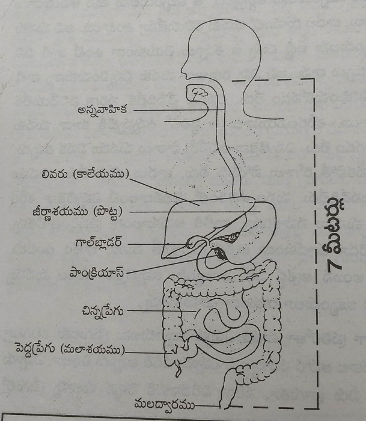
Our digestive system is 7 metres long.Mouth to stomach the path is half metre long and end of the stomach to small intestines end it is 5 metres long.From the end of the small intestines to the end of large intestines it is 1.5 metres long.Lets understand what actually happens in 7 metre long digestive tract.
The food we eat mixes with saliva and reaches stomach through oropharynx and oesophagus.Our stomach is a sac of 2 litre volume.Our stomach has hydrochloric acid and gastric juice, they kill the microorganisms present in the food.The food we eat is present in the stomach for 2 hours.If we eat non vegetarian food or any fat containing food it stays for about 3 to 5 hours.Our stomach has to work for very long to digest them.The digestive juices in the stomach break complex food particles into simple ones.Carbohydrates gets digested in the stomach mostly and the resultant gets mixed up with the blood.Non vegetarain and fatty food doesn't get digested completely.
The food we ate entered liver first, it purifies the food in the body and distributes it to different parts of our body.In this manner the food first enters the mouth then stomach and later enters small intestines.When our stomach , small intestines are healthy food gets digested easily. Digested food gets absorbed from the intestines and this gives us energy.
Large intestines:Once the process of absorption gets completed , left over undigested food and fibre material enters large intestine.For example after making tea we strain out all the waste materials, it happens the same in our body.Here the absorption happens on the stove and small intestine does the same to our body.All the waste material gets filtered after the absorption of food material.We through away the waste materials in the dustbin after making tea, in the same manner our body throws the waste into large intestine.Our large intestine is 1.5 metre long and 2.5 inches wide.Our large intestine has 4 parts.
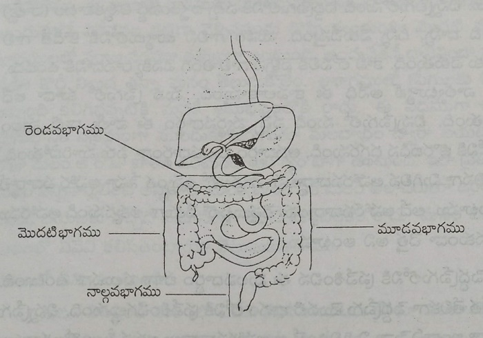
- First part: Ceacum and Ascending colon (Ceacum & Ascending colon)
- Second part: Transverse colon (Transvers Colon)
- Third part: Descending colon (Descending Colon)
- Fourth part: Rectum and Anus (Rectum & Anus)
Our large intestine is also called as excretory part.Inner layer of large intestine has many mucosal layers that secrete mucous all the time.This mucous prevents sticking of faeces to the walls of large intestines.The waste material entry into large intestine is unidirectional,it means it doesn't enter back into small intestines.A value is present seperating small and large intestines, it is just like an air pump that pushes air into the tube but it doesn't come back.Once this waste enters large intestine it is called faeces.The food we eat is called meal when it is in the bowl and waste when it is in the dustbin.
The food that entered into large intestine is thin in consistency.That is the reason why it enters easily into first part of large intestine.The remaining 10% absorption happens here.It has rich blood supply sufficient to absorb the food that got digested.Only small amount of water gets absorbed into the small intestines, remaining 70 - 80% of water gets absorbed into the body. This hardens the stools, the peristalsis of large intestines helps in movement of stools.This moves the waste from first part to the second part.The mucous secreted helps in movement of wastes, these wastes enters into the 3rd part later.We feel like defecating once the waste increases the pressure in this 3rd part.This waste moves into 4th part when we tend to defecate and moves out.
The waste never gets filled in this part.It comes there only when we are about to defecate, we can't control the urge when it enters into 4th part.The 4th part has rich nerve supply that is the reason why we feel the pain when we excrete hardened stools.On the other hand the remaining 3 parts have poor nerve supply, we don't feel anything when they are even packed completely and got damaged by it.In this manner the waste material enters the large intestine and goes out everyday, then we remain healthy.It happens so whenever we eat.If the input and output is same we won't experience constipation.Lets understand what is present in the faeces.
What is present inside the faeces?
Lets understand the contents of faeces, why it smells bad and what are the waste materials inside the faeces.
- Water: 60-70 percentage water exists. If the waste materials comes out within 8 - 10 hours it stays soft other wise its water content decreases.
- Waste materials: 15-20 percent waste materials exists.
- Undigested fibre to the most extent
- Intestinal juice
- Cholestrol
- Bile juice which is produced by the liver contains bilirubin .It is responsible for the yellow colour of waste material.
- Undigested salts
- Undigested non vegetarian foods, fatty materials and carbhohydrates
- Bacteria:They occupy about 20% of the waste.The living and dead bacteria expell out of our body everyday through faeces.This leads to bad smell of our faeces.
Along with above contents the mucous secreted in the intestines combines with the faeces , makes it soft so that it moves easily outside the body.In people with good excretion this waste material is removed everyday, in people with constipation it gets stored inside.The fibre in the body mixes it and comes in the front.People who drink adequate water has the stool soft and it gets moved out easily.People who consume low fibre diet like non vegetarain foods, processed foods etc , this waste material doesn't move efficiently and they develop chronic illnesses.
Till now we understood what happens in our digestive system starting from mouth to anus.Lets understand in detail in the upcoming topics about how much time does it take for the food to form faeces, how much time does it take to reacg anu, the times of excretion inorder to completely clean our intestines etc.
3. Immune system of the intestines
- Improving the immune system of your intestines - Best method to deal with
- Improve the disease resistance of your intestines - Get rid of diseases
- Increase in good bacteria - Increases your strength from within
- Mothers breast milk to a child - Makes their intestines healthy
- If stored faeces doesn't expell- They tend to increase the number of bad bacteria
- Win over all the bad happening in your body - Make friendship with the nature
The food we eat and water we drink has many harmful bacteria, viruses, toxins and poisons that harm us.If they enter the blood just as how food and water does we get reaction and die, the reason why we are alive yet is because of immunity.Our stomach and intestines immunity is working continuosly so that we live happily.Inorder to live healthy life we need to maintain it.Lets understand how immune system protects us with an example.If we take the water from our house fill it in a saline bottle and inject we die in 15 , 20 minutes due to allergic reactions.If we provide this water through mouth it takes 15, 20 min to mix with blood.Then we are not experiencing any reaction this is because the immune system of our stomach is protecting us and sending water to our blood.All this cleaning and purification is by the good bacteria within us.Lets understand about this.
Our intestines has 2 types of bacteria - good and harmful.If one is law, the other is sin.Law protects you and sin destroys you.Lets understand about these bacteria by comparing with them.If our immunity is good it means we have 80% of useful bacteria and 20% of harmful bacteria.When the useful bacteria is in such high amounts whatever be the toxins in food and water it cleans them all and nutrients gets absorbed. We won't face any trouble.We won't get any diseases even though the water we drink, the food we eat and place we live changes.You won't be troubled even if you don't follow any cleanliness.Our body fights infection just like how our army fights people coming through other countries.Animals that eat food mixed with mud, fruits without washing and consumes dirty water are not suffering from any diseases it is because of their immune system.When you have 75% good in your body the remaining 25% bad things are staying in control.In olden days people used to give less important to tastes, consume foods without polishing them and use to consume buttermilk, curd and starch water etc.That is the reason why their bodies are strong to get rid of any diseases.In these noone has 80% of useful bacteria, only people who eat natural and raw foods have it.Its very rare to find these people.In this kaliyuga unrighteousness is more when compared to law, the same rule is applied to human body. In these days people are giving importance to tasty food, food has become their motive to live. These habits and tastes are showing adverse reactions in the body. Currently our body has 3 parts of harmful and 1 part of useful bacteria.We see cases in our life that people who are living rightfully without accepting or giving bribes are facing troubles, in the same manner the harmful bacteria in our body and that enters through food are making friends and living happily.As the percentage of good bacteria is less the disease resistance decreased.In these people are suffering from allergies, vomitings, motions, viral fevers, cough and infections due to change in water, place, season etc.This kind of system is spreading diseases that is causing much harm to the society.Inorder to make ourselves healthy again we need to follow pratices that increases the amount of good bacteria inside us.
The good bacteria within us protect us from the disease causing bacteria by producing antigens and improves immunity.The good bacteria are called as lactobacillus.They are off some hundreds of varieties, but the most important one is lactobacilli acidophillus.This bacteria produces some vitamin b and k and supply to our body.These lactobacilli reaches a newborn baby through the mothers milk and build their colonies in the intestines.In children feeding on breast milk, 90% of useful bacteria are present in their intestines.It protects the child as long as he consumes mothers milk. We usually see children who consume mothers milk living healthy life.Children feeding on other milk sources or supplements tend to get sick often as the good bacteria decreases.This is because the lactose in the breast milk helps in growth of the bacteria.Since the time they start taking other food supplements this bacterial content starts decreasing.We tend to take turns to hospitals since then.The most important harmful bacteria is bacillus colli.This harmful bacteria usually grows in the large intestines.So on the whole our large intestines have more number of bacteria.
The reason for the increased number of harmful bacteria
Once this harmful bacteria increases in number they decrease the strength of good bacteria.So, now lets understand what are responsible for the increase of harmful and reduction of useful bacteria.
1.Constipation:The house for the harmful bacteria is large intestines.Inorder to build a house and grew trees we need space, in the same manner faeces provide space for the growth of harmful bacteria in people who are suffering from constipation. This stored faeces increases harmful bacteria in crores and makes every effort to kill useful bacteria.They ferment this further and obtain energy from these stored faeces.If we stop these storage and excrete everyday these harmful bacteria doesn't find a place to live and their number gets decreased. People who excrete 2 to 3 times everyday has little scope for the growth of harmful bacteria.As long as their number is less, good bacteria remains strong.
2.Powerful medication:The powerful antibiotics we use to kill harmful bacteria also kill useful bacteria in large amounts.Usage of antibiotics reduces the number of useful bacteria in the body.We are familiar with the saying that powerful medicine reduce the disease resistance power.Now we understood what actually happens.Every one got habitauted to use antibiotics for fevers, cold and cough.This behaviour is reducing good bacteria and causing us trouble.
3.Laxatives: People with constipation use these medicine, this may benefit us by releasing wastes but i causing us damage by removing all the useful bacteria.The medication that causes diarrhoea removes all the useful bacteria.
How to improve useful bacteria
- The natural foods like fruits, vegetables, sprouts are useful.If you are making them tasty by cooking it is of less benefit.The more you consume natural foods the more good bacteria increases in our body.Our immunity also improves by this.Its better you consume atleast 50-60% of raw food in your diet.
- Curd has more amounts of good bacteria, sour curd or buttermilk has them in large amounts.Our ancestors used to eat rice and curd as their breakfast, that is the reason why they are strong yet. If you ferment them more the harmful bacteria increases.You can avoid putting curd from the morning in the fridge , you can use it till evening.Its good to use curd and butter milk everyday
- Its better if you excrete 2 to 3 times a day
If we humans try to live the natures way we get immunity just like all other organisms on this earth.Then our body has more than 3 parts of useful bacteria and protects us.We should improve our strength from inside, How long can we hide ourselves from rain, air, snow and natural foods like coconut, honey , sour and sprouts? Even though we are in kaliyuga lets follow the thretha yuga here(3 parts righteousness and 1 part unrighteousness) and live a natures friendly life.
4. What is meant by constipation
- If faeces gets stored inside- Your health is at stake
- Don't get disappointed by reading the introduction - Don't get sick by not following the procedure
If we are unable to excrete the we food we eat today before the first meal next day we call it constipation.As the faeces travel slowly in the intestines it is called as constipation
According to us constipation is not being able to excrete once a day.Our ancestors used to call it constipation if they excrete once instead of twice.Nowadays 50 - 60 % of population excrete once everyday, they think they don't have constipation.But in reality it also comes under constipation.The food you ate 3 to 4 times is not lost all at once as feaces.The stools for next two turns gets stored, so this must be considered as constipation.There are many people in our surroundings who excrete once in 3 to 4 days. They don't consider it constipation even if they excrete once in 2 days.We are making definitions as we wish to make ourselves happy.It is not called constipation only when you are excreted twice a day.Only this prevents storage of faeces.If not then atleast some amount of faeces gets stored and we suffer its adverse effects.
Many people get disappointed after reading this introduction.They think that it is not possible for many people and lose interest.I am here to mention the methods that help you to excrete twice everyday. You will understand every detail happening in the intestines as if you are seeing them.If you understand what i say , you will learn whether what i say is true or not.If we stay constipated for long time we develop laziness.Lets learn in detail about constipation.
5. Reasons for constipation
- Eat natural foods - Don't give any chance to constipation
- Food without fibre - Can cause constipation
- If you don't drink sufficient water - Your stools gets hardened
- Consuming water provides good results - It cures constipation instantly
- If you give it a thought - You can get rid of constipation
- You won't expell when you are tensed - Don't worry we have a way
- Physical work increases peristalsis - It expells wastes without any effort
- Apply a good method - Get rid of constipation
We started developing constipation as urbanisation started.We are getting habituated to use artficial things once we gained knowledge and resources.As we lack the natural process, the natural process of our intestines got slowed down. Noone is bothered whether the food they eat is useful to their body or not. We are consuming everything that our tongue craves for the entire day.We find it difficult to eat the food that suits our body. People are suffering from diseases but cannot control their habits. As we got habituated to lead a mechanical life we are losing the natural way of living. We see this as constipation.We are making mistakes not only in the food we consume but also the water habits, excercise and thoughts. Our mistakes are causing us trouble in the form of diseases. We humans are not at all bothered about these warnings.As constipation is the reason for all other health issues, if we first solve this our health eventually comes back on track.Inorder to have a smooth transition from constipation to good excretory system we need to clear the obstacles first, there are 6 main obstacles they are
1.Consumption of fibre free food:Fibre free food causes constipation immediately.If you are consuming fibre free food today you start experiencing constipation the next morning. The fibre content in the stools decide the amount of faeces excreted the next day. If you consume no fibre food or fibreless food the wastes doesn't move efficiently in 1.5 metre long intestines.This is called as constipation.The reason why 95% of population is suffering from constipation is due to consumption of fibre free food.The fibre free food is polished rice, polished atta, polished pulses, upma rawa, sugar, ghee, milk, curd, cakes, bread, biscuit, choclates, icecreams, cooldrinks, sweets, eggs, meat, fish, prawns and all foods that are deep fried in oil etc. If we observe from the start to end of our day we don't find foods that contains fibre.If all the food we eat is polished or artificial how can our excretory system be good? When does these movements occur? Understand how difficult it gets for our body to push these wastes. Eating and cooking polished foods is easy, they taste good too.As we are experiencing happiness in the cravings of our mouth we are facing difficulties as the food passes downwards. The only solution to this problem is consuming fibre containing foods. Try eating fibre containing foods today you will feel the urge tommorow, the result is quick.This is what you are supposed to know and it depends on you to follow or not.
2.Inadequate water consumption: Many people drink less amounts of water inorder to avoid frequent urination and few avoid drinking due to its taste,whatever be the reason they reduced water consumption.They mostly drink 4 to 5 glasses and few people drink 7 to 8 glasses and consider that they are drinking more amounts of water.On the whole people are consuming less amounts of water.They are replacing water with beer, drinks , juices etc .All they prefer eating is bad, the water that helps is utilised the less by us.That is the reason all the waste is left inside the body by drying and faeces is one among them. The consistency of faeces depends on the amount of water we drink.When the faeces are formed it stays in thin consistency so that it can move easily inside the intestines , it gets easily expelled without sticking to the walls of intestines.People who drink adequate water has no need to absorb water from large intestines, it doesn't get hard and doesn't suffer from constipation.If you are drinking insufficient water our body takes in the water from the intestines, this hardens the stools and it doesn't move forwards properly and sticks to the walls of intestines and it takes it long time to come out.It is called constipation when you strain hard to excrete it. All these defects are due to insufficient water intake.Drinking water doen't even take a minute instead of doing this you are facing trouble for 15 min everyday straining. We feel irritated the entire day.Instead of doing all these its better you drink 5 to 6 litres of water.I am not asking you to pour water to fruitless tree, you get results tommorow if you give water today.You can tell me what is the thing other than water that gives such quick results.So start drinking water from today.
3.Consuming less food:The input depends on the output, we need to understand this now.People who work have big appetite and eat more and it produces more faeces. More faeces produces more pressure, if it moves fastly we won't have constipation. People who work less have less appetite along with this foods have salt,chilly powder, oils etc.If the foods we eat is tasty and satisfies after eating little amounts, people are eating little food many times a day this is leading to formation of less amounts of faeces.Every time faeces is moving only in less area, this little amount can't produce sufficient pressure for the movement of faeces.If you pour a bucket full of water it gets flushed easily in washroom but when you pour less water it takes more time to move.
Slow peristalsis leads to sticking of faeces in the walls of intestines, this leads to constipation.Eating in less amounts is making us obese , you may think i may become more fat if i eat more.Inorder to increase the food you eat but not be obese you need to eat 3 parts vegetables and one part rice and this increases the peristalsis.Eating fruits also helps to get rid of faeces.Its better you eat more of good food and reduce unhealthy things.
4.Not giving it a thought:People are interested in eating tasty foods everyday but no one is interested about excreting it.The main reason for constipation is lack of thought.You may not have good excretion even after you eat good foods and drink water properly.If you don't have a thought about excreting the nerves at the entrance doesn't get free.They do so depending on our thoughts.If you wish to be clean everyday, eat good food, earn more money and enjoy luxury you tend to achieve them.How many people are actually bothered about excretion? You can't work without desire.If you have desire you get thoughts, it helps in peristalsis and hence excretion.If you are in the thought that you will go when it comes, it never comes out.Some people think that whats the need of thinking about these shitty things.If you make a timetable to it just like other things and if you focus on it,it happens.
5.Due to tensions:Even kids these days are talking about tensions.You are suffering from tensions as you are magnifying everything.If we think in a way that everything happens to us on a purpose we stay stress free.We can't change what is happening and we can't stop it but not accepting reality is leading to changes in mood and thoughts and causing depression, irritation, fear, anger etc.They lead to chemical reactions that release hormones. These hormones show impact on blood, cells, nerves,muscles and they loose the natural way in some minutes.Our nerves gets stiffened from them, its like military people get stiffened once they hear the word attention.These people nerves get stiffened.If any of the above mentioned things happened our nerves react in the same way.The nerves in the anus also responds in the same way.The intestines tightly hold faeces just like the child holds his mother when he is scared.This tightly hold faeces doesn't come out easily.You won't get the thought to excrete and even though you get the thought but your nerves are stiffened , this leads to constipation.If you are experiencing tensions, irritations, diarrhoea etc you won't excrete that day.Inorder to over come constipation you need to wake up early in the morning and don't focus on anything else other than excretion.In the early morning your nerves will be relaxed and listens to whatever you say.
6.Lack of physical fitness:People with physical excercise has increased peristalsis in the intestines than people with sedentary lifestyle. Working can make the muscles strong and improves the blood supply.The muscles in the intestines improves blood flow and nerves send signals properly.This is the reason why people who work hard can excrete twice a day.People with physical work moves the abdomen front and back, the faeces in the intestines moves forward properly.People with sedentary lifestyle reduces faeces movement and causes constipation.
All the above mentioned reasons can cause constipation.Noone wishes to have constipation.As the things we do arenot proper, these reasons cause wide variety of problems.If we avoid laziness we can loose constipation.You need to consume 5 to 6 litres of water everyday, fibre containing foods , do physical excercise everyday, take less stress and we follow a disciplined procedure and habits you can get good excretory system.Constipation can cause physical stress and leads to depression.Its better we start understanding things otherwise it causes much damage.You and family can get rid of constipation and stay healthy and lead a happy life.
6.Our ancestrol excretory habits
- If your limbs move then your abdomen works - Faeces you used to expell out everyday
- They used to eat 3 times a day - They excrete atleast 2 times a day
- They used to eat early in the evening - They used to excrete in the early in the morning
In previous days people used to get food only when they work, even women used to have handful of work.They used to get hungry after they work for longtime.They used to eat large amounts of food.They used to eat food that is not polished i.e, brown rice and they used to not eat any fries, sambaretc.They used to eat leafy vegetables mostly due to lack of money or due to non availability.They sweat more post work.So you used to drink more amounts of water.As they work more they have increased peristalsis.They digest food very fast.They are just bothered about house and farm , they don't have many tensions.They used to sleep early and heavy physical work made them have a deep nights sleep.They get early in the morning at 3 or 4 in the morning.Their day starts like this.
First excretion:They used to drink the water placed next to them in the morning.It increases the load in the stomach.In those days they don't have any washrooms so they focus on it before the sunrise.If you focus on it completely, you get to do it.They used to focus on any other work after this, as they can't do things after starting work.They used to use neem sticks to brush and walk to a distant place do their work, this walk and water they drank increases load on the abdomen and pushes the faeces.He used to focus on his task as he many people coming after finishing.It used to take 5 - 10 min time to walk and these faeces move through the anal canal and you experience the urge before reaching.People used to excrete in that urge and it is awkward to sit their for long time, so they do it fast and finish it fast.
Evening time excretion:
If anyone in the house is suffering from constipation ,if they used to excrete once a day or experience indigestion they try to clean their intestines.They used to fast one day by using castor , kasturi methi with kashayam.They used to clear the faults in their intestines by doing enema.My family members used to do the same during my childhood.They used to gift 25 paisa for children who do enema.They used to make their children drink castor twice a day.They used to gift 50 paisa, children used to get tempted to these gifts and cooperate.They used to buy snacks with them.Our ancestors used to eat evening dinner early.So they used to eat dinner early and faeces used to ready in the intestines.
Our ancestors are aware about the benefits,happiness and health of good excretion.They considered storing it as bad for health and never neglected it.They can neglect eating food but not excretory habits.They used practise and try new tips and teach their children.Many people are illiterate among them, so they never neglected even minor health issues and try maintaining good health. The method which i am going to teach you is similar to what our ancestors followed. They used to drink water and walk on roads we are walking in our homes instead.
7.Problems people are facing these days inorder to excrete
- Drinking less water leads to improper digestion - It won't move fast without digestion
- Stop straining - Drink water, focus on it and expell it out
- Understand the importance of excretion - Learn to make it a habit
These days human beings do everything fast, active and with intelligence.He is controlling things that are far away from the place he is sitting.Everything these days is in human command.But the faeces in human body is not listening the human.It is depressing human body mentally and physically.Human beings are not able to understand that all these faults are due to his lifestyle and habits.
The days off hard work are gonna we have switches to on to do many things, the only physical work human these days do is walking in the morning.All the physical work is gone.People who do less work has less appetite and thirst, so they reduce water intake.Food digestion take a lot of time in them. It moves very slowly in the intestines.The food he eat is well polished with fries, sambhar, rasam, chutney, artficial processed food and bakery stuff. They won't get free till 10 - 11 at night but take a lot of tension.As they lack physical work they sleep less and thoughts even make them sleepless.They sleep at midnight and wake up by 7 or 8 in the morning.Their day start with office and business as they wake up very late.They follow time as they may get work late.This tension stiffens the nerves and this holds the faeces tightly.
First excretion:They drink bed coffee, its pressure is not sufficient for the intestines.Till then our mind gets diverted to headlines and television news for 10 -15 min timepass. As we are focussing on these things we won't focus on excretion.You can use washroom anytime you want because you have toilet in your own home and comfort. As you don't have any desire it won't move out.After that they try different techniques to move it.They drink coffee, some people get addicted to specifi brand coffee, they say i get motion only if i drink bru coffee.Some people smoke ciggarette, cigar etc and try.Some people need to read newspaper they feel like i get motion only if i read hindu paper.Some people press their abdomen inorder to increase faecal movement. They roam around their house and enter the toilet and strain themselveass, some people even place their fingers in anal canal and try many weird things.They are habituated to sit for long time so they put fans and newspaper in it.Some people spend lots of time inside that the people outside knock and call them out.They feel like a problem got solved after finishing.All these efforts are causing them irritation and they reflect it onto their family members.
They eat breakfast like dosa, idli, puri, chapathi that are completely fried in oil, they can't eat them stomach full and they neglect water consumption.They eat less in the mornings thinking that it makes them sleepy or they can't work efficiently post food.In the evening all they eat is snacks that lack fibre.They reach home late by 10 and sleep immediately after food.They don't think about excretion in the evening, they don't even get those thoughts if they think about what happened in the morning.They get tensed thinking about next morning.They eat their stomach full again that night.As they sleep immediately it won't digest properly.The faeces produced due to food in the morning fills the intestine.It takes overnight for the food in the stomach after dinner to digest.They don't eat properly the entire day, they don't drink water properly, no proper excercise, mental stress and no thought about excretion is damaging their health and spending their entire day like this.This is creating a mess inside the body and making us unhealthy.We are getting chronic diseases irrespect of age.
Some people find it different to consume castor, do enema, they ask how are we supposed to put it in mouth? Even elders these days are not aware about motion tablets and precautions to be taken during season changes , how can children know them?We are making a full stop to the clean process of the body by motions by consuming one tablet.We won't clean our body and we are not allowing our body to clean itself, we are getting into trouble both the times.Many people these days are not aware that excretion is good for health and motions help in cleaning our body.Many are aware about constipation if you are excreting once a day you were treated lucky.
8.How many times are we supposed to excrete?
- Learn from the kids - Change your old habits
- Excrete as many times as you eat - Otherwise it gets rotten inside your body
- Faeces are the waste produced inside us - Its important for us to excrete it
- If you eat three times a day - It is important to excrete thrice a day
Many people feel it scary when they heard the word how many times are we supposed to excrete? You might be thinking its very hard for me to excrete once a day and you are talking about number of times.Many people think that excreting once a day is healthy, we all are in the same thought till now.Now if someone says you need to do it twice or thrice you may feel something is wrong.Some people have long intestines and animals have short once, that is the reason they say why we excrete only once.This is not the correct answer.Many books also write that it is healthy to excrete once a day.I feel that those people might do it once that is the reason why they wrote so.
Our ancestors, daily wage labourers these days excrete twice a day, that is the habit of our ancestors.Lets understand about the infant drinking milk.The child who drinks mom's milk sufficiently excretes as many times as he feeds. They drink for every 3 hours, all the milk gets digested in these 3 hours and useful material gets absorbed and waste enters the intestines and gets ready to exit.When he drinks milk now it builds pressure and he excretes then. They tend to exrcete 5 to 6 times everyday in the same manner.This is the nature of the human body. Even we are given the same quality as animals. If you feed the child on milk supplements the straining process for excretion starts from that age.Since the day you start him on other diets he slowly develops constipation and it troubles him his entire life.
Every organism has the nature to excrete as many times as it eats.Vegetarian diet containing animals eat throughout the day and the faeces produce through out and excretion also happens.As they eat more they excrete more,On the other hand animals that consume meat excrete less number of times, they do it once or twice a day.That is their nature.To what law adoes human body belong?Vegetaraian law or non vegetarian law? or else some kind of mixed type? Its important to excrete as many times as you eat.
Since the past 4-5 decades humans got habituated to excrete once a day.If some children goes to washroom frequently parents get worried and show them to a doctor. There are many parents who visit doctor and complain that my child excretes more number of times , all the food he ate is eventually coming out, it may effect his health , please give him medicines.If you are thinking in this manner it means people who excrete once in a week and 10 days must be stronger and are retaining everything.Even the faeces stored also doesn't go anywhere.That is the reason why we human has ill conscience and more of constipation, we are not interested in losing it.
All the useful material we eat gets absorbed in the small intestine and only waste reaches the large intestines.Once it enters the large intestine our body doesn't take anything from it.Our body throws it out like a waste, what is the benefit if we retain such things?Our intestines push it forwards inorder to expell it out, they do so all the time.Our intestines does the same everytime we eat. But we are not capable of letting it out properly.If we provoke it moves otherwise it stays still.We are doing it once a day or once in 2 days.But we should be capable of sending it out whenever we wish. Our intestine should behave like we say but we shouldn't be acting according to it.Every household and every person is having this problem, every one is suffering without any age variation.People usually save valuable things but we are storing useless wastes and it is spoiling our precious health.So lets remember that we need to excrete as much as we eat.
If you eat once a day, they excrete once a day.Our sciences mention that our food habits define what happens to us.
You are a saint if you eat once
You are normal if you eat twice
You are a patient if you eat thrice
These days people are eating four to five times.It won't cause any damage if you have output the same number of times.They are eating so many times but are excreting only once or even once in three days or 4 days.If you stop all these habits and thoughts it is not very difficult to excrete once a day.It is not at all difficult to excrete as mnay times as you eat.All people usually eat thrice a day.so i am here to teach you methods to excrete thrice a day!You need not worry about that.Please kindly listen my words.You can do it thrice a day easily.
You are a patient if you excrete once a day
You are normal if you excrete twice a day
You are a saint if you excrete thrice a day
I wish all the people in the world excrete thrice a day !
9.When are you supposed to excrete?
- Give a certain time to excretion - Otherwise your life is a hell
- Your nerves loosen immediately after you wake up - Excrete the faeces by focusing on it
- Consumption of water puts pressure on the intestines - You can get rid of faeces if you concentrate
- Send in second phase of water - Reduces the load on the intestines
- Excrete the third time - Otherwise it gets rotten inside
- Excreting third time - Helps in health promotion
Many people may think is it necessary to make a timetable and habit to excrete. Its better if you allot a particular time to excrete.In this busy world people are always busy in something all the time. They allot the available time to all other works.They make a timetable on the things they should do and follow accordingly. They have a suitable time for reading paper, consuming tea, coffee, breakfast, sleeping and they do them accordingly.This is very good.But the humans these days didn't allot time to excrete.If you are like animal excreting everytime you eat its okay to not follow time.Thi is not possible with us humans. These days we have good sanitary facilities but the irony here is we are suffering from constipation, if you have the habit of delaying it then you face many difficulties. It troubles you later.If you neglect any work to do later it will delay , these excretory habits do the same.
If we humans didn't fix a time for excretion then body automatically does that in one or two days. We should be the one commanding here not the faeces, we shouldn't make that a habit to give it a chance. You can allot the remaining time for anything else. In that fixed time the fixed amount of faeces comes out. Our ancestors suggest that excretion should be done early in the morning. Our elders opinion is that we should start our day with excretion as the first important thing. Lets fix in mind the time we should excrete.
First time excretion: You should excrete the first time immediately after waking up. We don't get any thoughts immediately after waking up and the nerves in the intestines are also loose after we wake up in the morning.If you do any work after waking up it takes effort to move the faeces.Since the time we wake up our body does 50 - 60 % effort to push these wastes, if we do the remaining 40-50% effort then it happens easily. If we get involved in work then we should put 100 % effort to excrete.We should have a strong desire to excrete immediately after we wake up.With this desire now we will understand what we are supposed to.
We should wake up in the morning and urinate and gargle water then drink 1 to 1.5 litre of water.If you can't drink water at one go, you can drink water in phases in 5 to 10 minutes. Its better if you can drink them in one go.You should then focus on the abdomen and walk aroung for 5 -10 minutes without any thought disturbing you. We can feel the faecal movements 2-3 min after water consumption.If your thoughts gets diverted then you will not feel the faecal movements. If you focus then you will notice the faecal movements very clearly.If you go to washroom when it is moving you may not excrete completely.You should go to washroom once you feel the urgency.
If you drink the water in one go it increases the pressure on the stomach which further builds the pressure on the intestines.When the stomach is full it sends signals to the brain and increases the intestinal peristalsis.This pushes the faecal matter forwards.Its like a mother asks his son to go to washroom so that he can not feel uncomfortable in school but he doesn't go, she then makes him bath feeds him food and milk after eating he rushes to the washroom saying its urgent without bothering school time.The water helps us in the same way milk and breakfast helped the child.We can brush our teeth or can do other works after first time excretion. You can do excercise, yoga, walking our household work after 20 min of water consumption. If you excrete then you can do the above mentioned works easily.
Second time excretion:If you first attempt of excretion is successful then your 1.5 metre long intestine may get empty.It takes 30 -40 min for it to fill again.The excercise we do or the work we do pushes it forwards. It makes the second phase of excretion ready to deliver at the anus.We try for the second round of excretion after finishing excercises or 45-60 min after excreting or if you have any work you can do this after1 and half hour.You should repeat what you did the first time, you are supposed to drink 1.5 litre water and walk for 5 to 10 min and then focus on excretion. You should excrete only when you feel the urge. If you do so your 2nd round of excretion occurs smooth and thin consistency, you feel as if weight is removed from your head.
In this seond phase excretion the conistency of stools is watery, some people may think that is it diarrhoea and worry. There is no loss in doing so, the water we drank pushes the faeces forwards.As we drank lot of water 85-90 % of water gets absorbed and remaining 10-15% of water moves into the intestines.Drinking water in this way makes a minimum of half glass to one glass of water to move in the intestines.This dissolve the faeces and moves it out. You can start eating 20 min after your second phase of excretion.If you have the motion sense that you are supposed to excrete twice in the morning then you get license to eat breakfast.
Third time excretion:The best time to excrete in the evening i between 5 to 7 pm , many people finish their work by this time and few people stay working who have their own business.Place doesn't matter if you have the intention to folow.You should drink water when your stomach is empty and it is the best time to do so. In the evening we are usually filled with thoughts we need great focus inorder to excrete.If you drink water during this time you excrete urine before you sleep and this won't cause any sleep disturbance. But if you drink water in this way late you can excrete but your sleep gets disturbed due to frequent urination. If it is not possible between 5 to 7 you can do this anytime before you sleep, its important we excrete third time before we sleep.You can do this even without water consumption but just by focussing on intestines. If you have no problem waking up once or twice at night or if your stomach is empty you can drink water even at late night, its completely your wish.What i want you expell thrice a day, i am not bothered about what method you people are using among the above mentioned once.
You shouldn't forget that you are supposed to make it part of your timetable , drink water and excrete thrice. The two rounds in the morning is very important.Our mothers ask children before feeding did you brush? do you have your bath? you should make it a habit to ask did you excrete twice? Tell them you feed them only if it happens, then everyone listens to you. From now on this two rounds word should be heard in our houses as the morning suprabath. Some places in kolakta has a tradition to wish people in the morning not by saying hi but by raising two fingers high as if asking others did they excrete? He is considered better if it happens otherwise no. But we ask people are you fine? The opposite person reply by saying I am fine, but this person excretes once a day or once in two days, other person may do it once in three days. They act as if they are fine outside, now their is no need to act.If we can't ask others about it atleast we ask our family members about it. Our health gets promoted only if we excrete thrice a day. In our work we need someone to promote us but here in health it is self promotion. Don't worry if it gets little late their is need to worry.
10.How does faeces move?
- It happens if you try - You need to find a way to excrete atleast twice
- If you excrete once in two, three days - It causes illness
- Excreting twice everyday - All the stored faeces is lost
We eat thrice everyday, so lets learn who does faeces form and reach large intestine and by what time it reaches intestine.Lets talk about how excreting thrice a day empties the intestine.
Inorder to clearly show you the large intestine in the image, we drew it from the second part excluding the stomach.Usually the part below the stomach is called second part. When the large intestine is empty then we will learn who faeces forms in the empty intestines.
8 in the morning
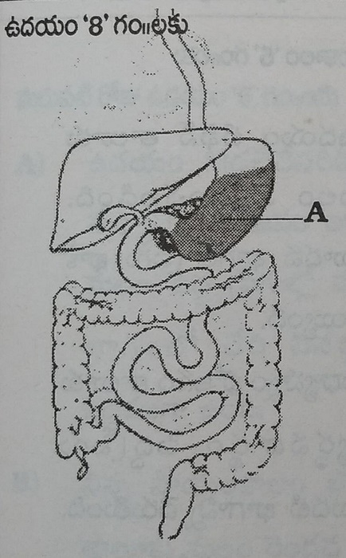
A.After you eat breakfast your stomach full
12 Noon
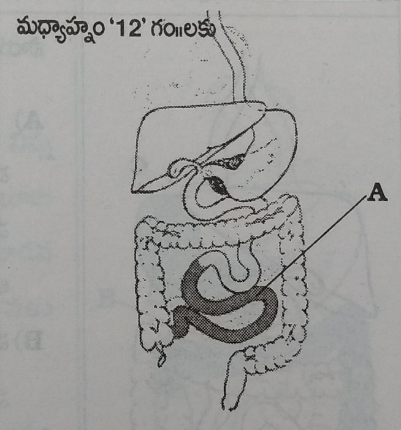
A. After you consume breakfast then all the useful material gets absorbed and waste material enters large intestines.
1 noon
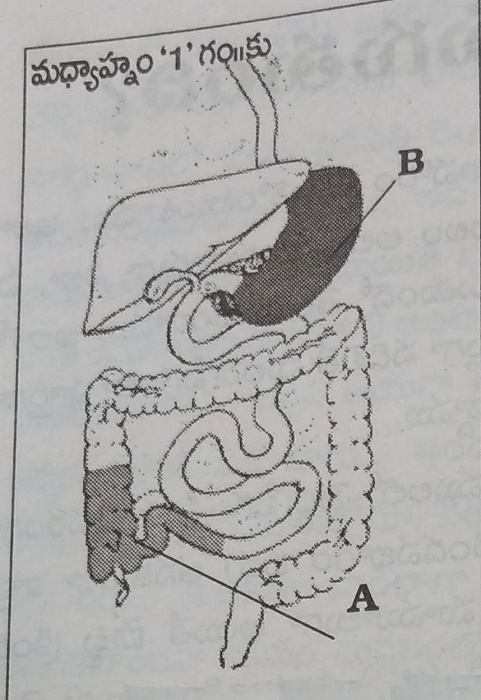
A.Morning breakfast fills the first part of large intestines
B.Consumption of lunch fills the stomach.
5 in the evening
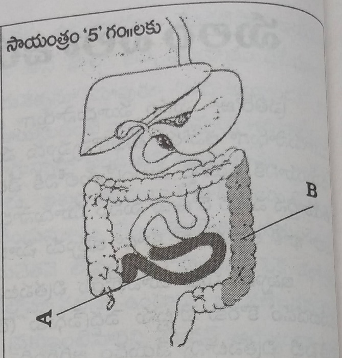
A.The useful material from lunch gets absorbed in the small intestines and waste material enters the first part of intestines.
B.The faeces due to the breakfast enters the third part of intestines and gets ready to excrete.
6 in the evening
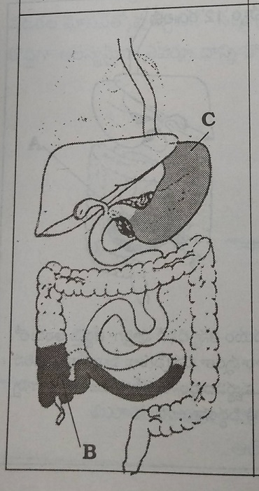
A.The faeces due to breakfast gets excreted.This empties the third part of intestines.
B.The waste material due to lunch gets filled in the first part of large intestines.
C.We ate the dinner in the evening.
10 at Night
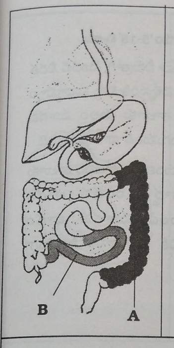
A.The waste materials due to afternoon lunch enters the third part of large intestines.At nght 10 we won't excrete the waste so it is ready to get excreted the next morning.
B.The food we eat in the evening by 6 gets digested in the small intestines and gets absorbed and waste material reaches the first part of small intestines.
Next morning 5 am
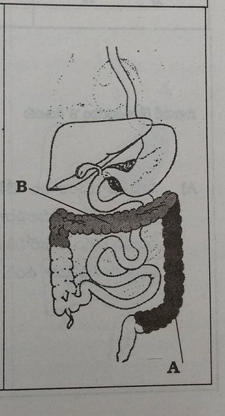
A.The waste material of yesterday's lunch is ready in the 3rd part of the intestines, it is ready for excretion.
B.The waste material produced due to dinner is present in the 2nd part of the intestines
Next morning at 5.15 am
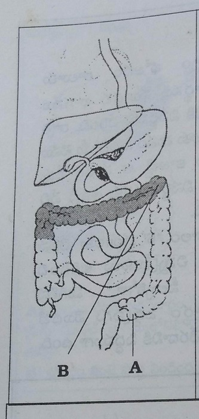
A.Since the time you drank your first round of water and finish your first excretion the excreta of yesterdays lunch clears out from the 3rd part of intestines.
B.The waste due to yesterday's dinner fills the third part of intestines.
Next morning 6 am
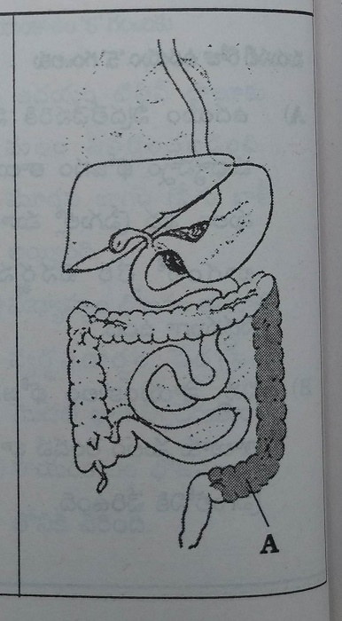
A.The waste material due to yesterday's dinner is ready to excrete in the 3rd part of intestines.
Next morning 6.15 am
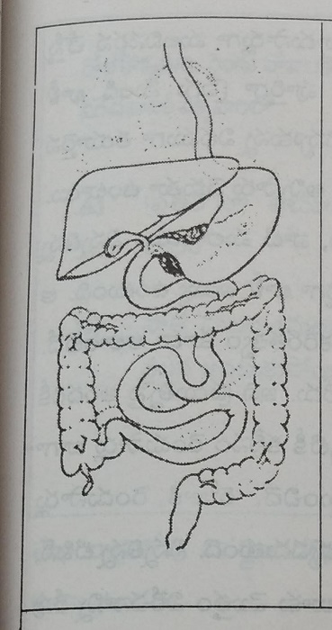
A.If you drink 2nd round of water and try the faeces due to dinner present in 3rd part gets expelled
B.This three times excretion clears intestines everyday.
Next morning 8 am
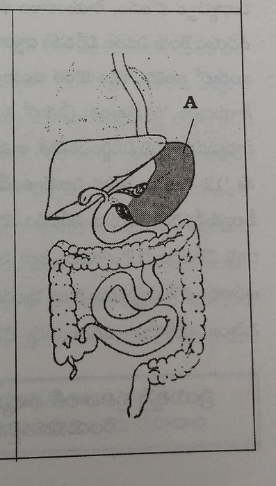
A.You ate your breakfast.
B.Small intestine is waiting for food.
C.Large intestine expelled all the waste that is produced and is empty.
As mentioned above if you excrete thrice everyday all the wastes from the large intestine gets empty everyday. All the animals in the world do that everytime they eat, before they consume food the next day their system is clear from the waste produced the previous day.It is the health secret of these organisms. Our body type is also the same. We forgot that, there is never late to realise. Everyone can achieve with effort. If you can't do it thrice its better even if you do it thrice.It is possible for everyone, but their is some loss in this the waste due to food ate in the morning should stay in the intestines overnight and all the water in it gets absorbed, it becomes dry and sticky. The harmful bacteria in the intestines grow in them overnight.If you can excrete the morning wastes by evening or night you can overcome this harm.
In people who excrete once a day or once in 2 days
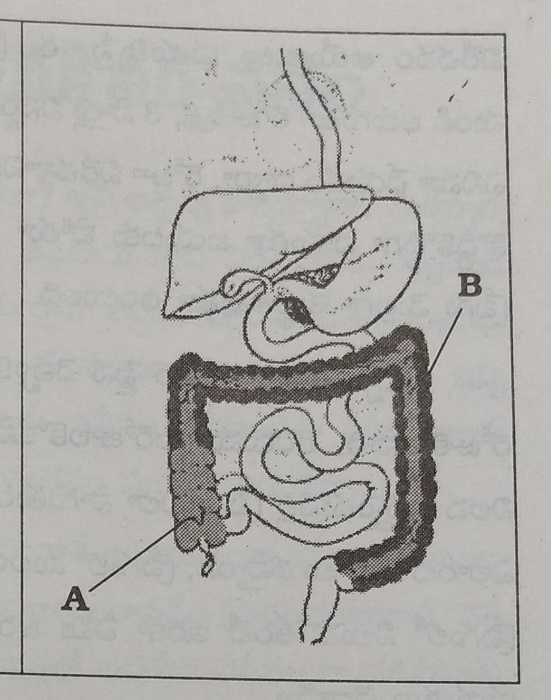
A)The waste produced everyday and
B)Old wastes
Till now as people are not aware about what actually happens in the intestines? How these wastes moves? there are okay to excrete once in 2 days.Now as you understood what actually happens that these wastes gets sticky and sticks to the walls of intestines, there is only little space left for waste movement. If you follow what i taught you now the waste produced moves from the space present and helps excretion.Doing enema helps in excretion of old wastes, with time the intestines gets cleared of wastes.
Lets learn what happens if we excrete once in 2-3 days, the harm that happens to our body due to this, how does harmful bacteria grow in the intestines, what happens if it stores for long time.
11.Example of good excretion
- It should happen in 5 seconds - This is the example of ideal excretion
- Animals expell what it is called for - We humans want it to come whenever we are free
- If you can't change the procedure inside - You can't escape the discomfort
Are you surprised?Thinking that good excretion also has a ideal goal.It may be the first time you are studying about excretion. Our parents should be teaching us about it since childhood.But nowadays this is not happening.You are atleast learning it after this long.Lets atleast teach our children about them from now on.
Ideal excretion: When you sit to excrete it should happen without lag, without straining and urination should start after finishing excretion.All the waste should be excreted once in 5-6 seconds and our anus should close once we are done.This is ideal excretion.
Above mentioned thing happens in animals and birds, are they any lucky humans in whom this occurs?Many people have this doubt, you may not believe even after my repeated saying.You will understand if you experience. During our infancy we excreted as many times as we are feed just like mentioned above.Since the time we stop breast feeds this change occurs.Child of age1-2 years follow the habits which he previously has, he hurriedly gets up after finishing he is aware when to get up but mother forces him to sit, she waits till 5-10 min.As she is habituated to this she stops him,Our mothers make us sit for long time and eventually we learn what they do and this change happens.
In our case we urinate first then a small amount faeces comes out due to straining.Our anal opening remains open as all the content is not expelled.If we strain more we excrete little amount after 4-5 min.If we do this for 15-30 min we excrete in installments.We come out as our legs start aching by then.There are many people in our colonies where people sit in washroom for hours.These people read newspaper in the washroom inorder to not waste time.They read the entire newspaper but the work they went for doesn't complete.People get wide variety of thoughts in washroom, they enter washroom toexcrete and gets troubled.The should come out happily but these people come out as if they got duck out.
Animals excrete when they feel like and we humans want it to come when we are free, this is the difference between we humans and animals.That is the difference between good excretion and constipation.If your excretory system is good noone gets to know that you went to washroom , you come out so quick.In the begining you wait for 30 second to 1 min, this is due to lack of habit.If you get used to good excretion you don't feel like sitting their for longtime. Our habits depend on us.If you change your dietary habits and waterhabits you can have good excretion that too in 5-6 seconds.
12.Why does good excretion makes us happy?
- You won't feel happy if you don't expell - Good excretion gives you happiness
- Its better to loose unnecessary things - Don't get greedy incase of excretion
- It happens even with the king - You get relieved once you are done
- You feel happy if you leave the waste - It is the secret you have to know
Our body stays healthy if we stays healthy if we take in whats needed and leave out the waste.If you retain waste your body troubles you.Our body has the habit to excrete waste, it doesn't store the unnecessary things, it won't stay calm if useless things stay in.It strives hard to throw them out.For example if we are eating a mango and the fibre part gets tuck between our teeth we strive very hard to remove it first by the help of tongue then by stick, we won't be relieved un till we remove it.The same happens when something falls in our eyes.Our eyes produce tears inorder to expell it, same happens with all our organs.We struggle till we remove it, we feel happy once its gone.
Our body tries to throw away the carbondioxide,sweat, urine , faeces which are not useful to it, it gives full effort to expell them.If we cooperate with it it does things very fast.We feel happy in the morning when we sweat.Whenever our bladder get filled we feel like urinating, we won't stop feeling it untill we expell it, we feel relieved after urinating.The same happens with faeces,all the wastes gets expelled out in the form of faeces.The wastes of our body mostly excrete in the form of faeces, our body absorbs all the useful material and wastes enter the large intestines.All the wastes are present in the large intestines, it is expelled out.If we also focus on its excretion we can stay happy.For example we get itchy , if we listen to our body and itch we feel happy, but if we do so when it is not asked we feel irritated and in pain.If we excrete when our body asks for it we feel happy.
Humans feel happy when they excrete all in one go, we can understand this feeling with experience.In shri krishna devarayalu times, the king as tenali when humans feel happy, he replied by saying that they feel happy when they excrete in one go" in the court room.king asks him what is this answer, human feels happy when he eats and have sex, then ramakrishna says okay and says you need to listen to me inorder to understand what i say.For it king says okay.He makes king to wake up early in the morning at 4 and takes him to jungle and tells him he should not ask why.King sits in his horse without any tension.Then the time when king usually excretes comes, he tries to control it for a moment and then it becomes unbearable then he asks his soldiers to stop so that he can go, but as per the rules tenali says the king should do whatever he asks and shouldn't get down. Then king sits back trying to control,this is increasing his trouble.He then asks them to stop otherwise he would kill them all and then king finishes in work and comes back and tell now i will sit here as long as you wish.But tenali tells the reason i brought is over, you might have realised what i told you is correct lets go back.This is the story.
Human experience this happiness every time he excretes. Every human tries for it but they get it in install ments which is causing them trouble rather than happiness.Its better if installment procedure is gone and we do it like fixed deposit.When i talk about happiness, i remembered a story which i wish to share with you.Every time we sit to excrete we tend to observe the thing we call shit,Tell me if you don't see it.You might be telling you do that you never know the reason.This is the secret i'm talking about. We know it is bad but we observe it to see the amount. The less it seems the more we are unhappy.We try hard after that to excrete.We feel happy if we excrete in large amounts, that is the secret.
13.Food that helps in good excretion
- Increase in fibre content - Cleans our intestines
- Foods that lack fibre - Causes damage to our intestines
- Storing wastes doesn't make you active - You need to expell wastes inorder to be healthy
- The bacteria that multiplies in faeces causes cancer - The solution to this fibre containing food
- Fibre removes the stains on vessels - It also loosens the hardened stools
The faeces are produced based on the type of food we eat. This fibre plays an important role in excretion.If you eat food contain fibre more amounts waste is produced, this increases the chances of good excretion.You get constipated if you eat food containing low fibre or foods without fibre.Lets understand where does this fibre present in foods.After consuming seeds of pomegranate we feel some juice and the rest is all fibre, along with the nutrients this fibre is also important.We need to eat food that has both the qualities.
Lets understand what happens in the intestine if we eat food that has fibre.Once we eat the food it gets digested in stomach and small intestine and all the nutrients gets absorbed here, leaving behind the waste materials.These fibre aborbs water and swells and moves forward by taking along the undigested food, dead cells, mucous and harmful bacteria.The sir name of a girl changes with marriage in the same manner the food and fibre of small intestine is called faeces once it enters the large intestines.This fibre slowly reaches the large intestine.If you eat food containing more fibre, more amount of faeces is produced, this moves fast thus preventing constipation.This is the reason why constipation is rarely seen in working people. If you eat food lacking fibre then once the absorption of food occurs then nothing stays in the intestines, as their is nothing to clean dead cells, bacteria and undigested food they settle their and cause chronic diseases.Animals that eat low fibre food excrete once in 2 days , their faeces are dark and little, the reason for this is lack of fibre.So lets eat food containing more amounts of fibre.
Food containing fibre: The wheat atta, brown rice,cereals, pulses,castor,dates, coconut,leafy vegetables,vegetables, all types natural foods contain fibre.Its better if you eat them in sufficient quantities.
Fibre containing foods(100 gms contain)
- Wheat - 1.2gm
- Wheat atta - 1.9gm
- Ragi- 3.6gm
- Brown rice - 0.6gm
- Sprouts wheat - 1.4gm
- Bengal gram - 3.9 gm
- Green gram- 4.1 gm
- Green peas - 4.5 gm
- Yellow peas - 4.0 gm
- Soya beans - 3.7 gm
- Amaranth leaves- 1.0 gm
- Spinach - 0.6gm
- Coriander - 6.4gm
- Carrot - 1.2gm
- Drumsticks - 4.8 gm
- Beans - 2.0 gm
- Cluster beans - 3.2 gm
- Brinjal - 1.3gm
- Snake guards - 0.8 gm
- Tomato - 1.0gm
- Dry coconut - 6.6 gm
- Wet coconut - 3.6 gm
- Groundnuts- 3.1 gm
- Gingelly seeds - 2.9gm
- Dates- 3.7 gm
- Drydates- 3.9 gm
- Banana - 0.4 gm
- Apple - 1.0 gm
- Amla - 3.4 gm
- Guava - 5.2 gm
- Grapes - 3.0gm
- Mango - 0.7 gm
- Papaya - 0.8 gm
- Pomegranate - 5.1gm
- Sapota - 2.6 gm
- Custard apple - 3.1 gm
- Meat - 0gm
- Egg - 0gm.
- Oil - 0gm.
- Fish - 0gm.
- Sugar - 0gm
- Milk - 0gm
Advantages of fibre food:
1.If the food we eat contain more amounts of fibre, we have the chance to excrete 2-3 times, this also doesn't make stools hard.This improves the chance of excreting soft and more amount of wastes.
2.The bacteria in the intestine act on the fibre material and produce emulsified gas.This makes the faeces soft.
3. If we eat food containing more amounts of fibre , it increases the peristalsis.It digests the food easily.The food moves in the intestines fastly. If the food moves this fasts, it doesn't ferment and we get very less burps and flatulence.Inorder to reduce the flatulance it foods with more fibre.
4. The fibre doesn't allow storage of faeces and drying, it moves freely in the intestine.So we excrete immediately after we it,We won't be sad after excreting.No chronic diseases occur.
5.People who excrete 5-6times in little amounts, who experience pain while excreting, who have sticky stools, who gets diarrhoea due to change in weather and water,People who take long time to excrete and people who suffer from constipation get relieved of symptoms if they consume more fibre containing foods.
6.Researchers say that harmful bacteria in the intestine cause cancer.The growth of bacteria depends on acidic nature of the intestines.The bacteria in the intestines break down the fibre and makes the faeces acidic.As the faeces are acidic it prevents the growth of cancer causing bacteria.
7.As these fibre material prevents storage of faeces in the large intestine, it removes the toxic wastes from the intestines.
8.The fibre increases the useful bacteria in the intestines.It also reduces the ammonia in the large intestines and improves the immunity.
9.Once the dead cells in the body reaches the intestines, the fibre holds the waste in the intestines and cleans it.
We ate fibre less food all these days.The faeces produced due to it is causing all the problems.As we understood it now we should behave intelligently.When the plate we eat gets stained by oils, we wash it with fibre.In the same manner the fibre in the foods clean the intestines and helps in getting out the dead cells and bacteria.It also gives us health,comfort, immunity.In order to get the fibre in any fruit we should never peel them.You should swallow the fibre when we ate pomegranate,citrus,guava etc.You shouldn't consume more amounts of fibre as they cause trouble to our body.The fibre that is white and easily digestable is profitable.The food i mentioned above is enough for good excretion.
14.Methods to cure constipation
- The only solution is water consumption - You will get good excretion
- Drink water and finish excretion - Then eat natural foods
- Consume sprouts and dates - This is good for health
- Get rid of 7 tastes - Enjoy the natural taste
- Consume fruit juices in the evening - It prevents weakness
- Develop in all kinds - Change your diet and protect yourselves from constipation
- Follow the method - Loose constipation
We have lived our lives without a proper method to consume food, water and thought.We are suffering from constipation, uisng medicine to cure constipation is harmful.Medicines further increases constipation.We understand why people suffer from constipation.Now we learnt how to treat it.So we need to try to follow things we already learnt inorder to get rid of constipation.So lets learn to have a good excretion, when to follow things and follow the details we learnt.
1. You need to consume 1.25-1.5 litre water and focus on the first round excretion and finish it.
2.After drinking first round of water you can do exercises, walking, yoga and house holdwork after 20-25 min and you should see that you sweat for 1 hour.This increases the blood supply to muscles and nerves, increased blood supply is beneficial.
3. After finishing exercises and taking rest for few minutes you need to drink the second dose of water and focus on second round excretion.If it moves normally you can go otherwise don't strain yourselves.
4.If this technique doesn't work or they are having it in little amounts and are unhappy or who are suffering from constipation from longtime must do enema.You need to do enema 25-35 min after drinking 2nd round of water.You can do your daily chores after 2nd round of excretion.
5. You can eat any food material25-30 min after the consumption of water.All the above mentioned things should be finished by 7.30 -8.00 in the morning.You need to stop drinking coffee, tea.They cause much damage to our body.The first step to health is leaving behind all the bad habits.You need to consume natural foods before 7.30-8.00 in the morning.If you take in the form of juices it is good for absorbtion. The wake up call to intestines is leafy vegetable juice.No need of honey and lemon water.Try and drink leafy vegetable juice, you can use leafy vegetable that has less or no pesticide.The vegetables can be keera, tomato, beetroot, carrot,snake guard,cucumber etc. You can combine 2 to 3 vegetables and grind them and seperate the waste and drink.You can mix honey 4 tbsp and lemon juice to it and drink. Its better if you can grind them to soft consistency and drink without seperating.If that is not possible its better you drink and lemon water.
6. You can take any food 45 min after drinking this juice.We call this breakfast. The best breakfast to stay healthy is sprouts.If you are suffering from constipation, its better you not start this from now.For people who have the need to do enema must eat fruits like papaya, pomegranate,sapota,custard apple,mango,dates in the amounts that fulfill them.Eating them increases your appetite, it gets digested easily and more amounts of faeces is produced and cleans the intestines . If People doing enema are suffering from diabetes they shouldn't be eating fruits instead then can consuem saltless idli, chutney without salt and oil. They need to eat as mentioned above as long as they do enema. You can do enema till your constipation gets cured,you feel hungry and your digestive system gets back to normal.If your first round of excretion is good, your appetite is back and you are not suffering from flatulence problems you can start eating sprouts,coconut,dates etc as breakfast.You can soak the seeds in the morning and remove them from water and tie them in a cloth at night and consume the next morning.You can soak groundnuts at night and consume them in the morning.If you can eat them you can eat them stomach full.If you are suffering from diabetes you shouldn't be consuming dates.You can start eating sprouts as breakfast once you stop doing enema.Inorder to reduce weakness you are supposed to eat them in sufficient quantities. You can eat 10-15 dates, when we talk about snacks.
7.You can start consuming water 2 hours after food to 30 min before lunch upto 1.5 litres.
8.You can have your lunch at 1 or 2 pm. You shouldn't use white rice as lunch, prefer brown rice or wheat rice or chapathi without oil. If you wanna reduce your weight or cure your diabetes you should be eating chapathi with curry.If they don't have any problem mentioned above you can eat brown rice or wheat rice. Its better if you can eat half kg to 1 kg curry with it. Eating more amounts of curry helps. If you wanna eat more amounts of curry its better you add milk and make it a gravy.You can't eat more by adding oil and salts.In naturopathy usage of salts,chilly powder,sugar,masalas,oil and ghee is restricted. I wrote a book on why we should not use these 7 tastes, what we should use in the place of them in my book food - thought.If you can cook food as we say you can get rid of many diseases without medicine.Till the time you read the book and start following them you can cook your routine food by reducing 3 parts of the masalas and oils.This cures constipation first, then if you change the method of cooking you can overcome diseases.You should swallow well while eating and never consume water.You can use curd.
9.You can drink water 2hrs after lunch. Now you can drink one litre of water in 2 to 3 phases in 1hr and 1hr.30 by taking time.
10. You can drink any fruit juice at 4 - 4.30 in the evening.Its better if you can drink juice of orange,citrus fruit,pomegranate,jack fruit etc. You can add honey to it or eat fruits.If both of them are not possible then you can use honey and lemon juice. If you are not hungry then drink water and make your stomach starve.
11.Drink 1 litre water at 6-6.30 am just like in the morning and focus on the excretion.You may or mayn't excrete but don't stop the thought.
12.You can eat your dinner 25-30 min after consuming water that means you should finish your dinner by 6.30-7.00 in the evening.If you eat early it gets digested and the faeces gets stored in the intestines. If you eat your dinner by 9 or 10 it doesn't reach the intestines,the main secret is eat anything before 7 pm.
If you don't have appetite or suffering from indigestion, heavinessetc its better you eat fruits instead of boiled foods.You can eat seasonal fruits in sufficient amounts and eat dates along with them so that you won't feel weak.Eating fruits reduces the work load on the digestive system, makes you feel hungry.But people with diabetes shouldn't consume fruits.They should eat chapathi instead of rice with more curry cooked as gravy just like morning.You should do this for 20-30 days to get rid of constipation.You can start eating rice once you start excreting 2 -3 times a day. You can use banana or mango along with curd, you can drink butter milk instead of water.When you wake up late at night and are hungry you can consume honey and lemon water. If you wake up early you can do all your chores and follow the time table
If we follow the above mentioned schedule we will not only overcome constipation but also can cure our health.We can cure all our illnesses.If one among the six people in a family is ill the others also can't be happy. When our body is healthy we tend to be happy. The time table helps you to get rid of constipation and become healthy.For good health there are 12 rules that help everyone. By following the above mentioned rules and read the book food and thought written by me, it helps you in cooking without salt and oil.This slowly gives you good health. If you face any difficulties while following these diet you can read the book food is happiness, you get all the information there. If you are following these rules it cured constipation in 95% people in 10-15 day,it took few more days for the remaining. We can slowly get rid of this constipation.I wish everyone starts following natures way of living and lead a healthy life.
15.The relationship between our soul and faeces
- Where there is the will there is a way - Focus on the faeces first
- It gets expelled only when you focus - Otherwise it sticks inside
- If you focus nerves gets loosened - This is the chance then go and excrete
- You soul stays with you forever - Expell the waste inside your body
- Its the method to have good excretion - You should change your habits
Our elders say that where there is a will there is the way.In the same manner it won't get expelled untill you focus, eat natural raw foods, drink water according and do enough physical work and focus on excretion.In this manner to comes out on its own. As the pressure in the intestines increase this send reflexes to brain and brain urges us to expell. Animals does that instantly, but we humans put that in mind that if it comes in odd times its troublesome. This thinking stops us from excreting. We are controlling as this is not possible at that moment, but when it is possible its better we focus so that our nerves get loosed and we feel like excreting.We humans can't excrete whenever and whereever we want and are storing faeces in the intestines so lets focus atleast when we have time and get rid of constipation.
The faeces produced due to breakfast reaches the intestine by 2-3 in the afternoon.We usually stay in offices and business at that so we delay it. The faeces produced due to lunch reaches intestine by 7-8 but we are either busy in work or eating dinner and neglect it.The snacks we eat gets waste ready by 10 , but we neglect it as we are sleepy. The waste due to nights food gets ready in the intestine by 3-4 in the morning, but we delay it as we are sleeping.So even though the waste reaches the intestine we are stopping it as we are busy in our work.As the waste produced in 4 times gets accumulated there now you need to focus on it inorder to excrete.We are suffering from constipation as no human takes interest in them. For the situation of animals it is unnatural but for humans it is natural. Excretion listens to our command only when we show interest.
The only time when we are free is early in the morning, so its better if we try to expell these stored faeces early in the morning. Its not possible to everyone to expell faeces with thought without any pressure. If we put pressure by consuming water , the signals reach our brain and it tells intestine to excrete. First we need to drink water and then we should not divert our thoughts inorder to excrete. If we focus on the large intestines then the faeces stick their gets free. When the signals from the brain reach there the nerves leave the faeces or hold it depending on the type of signal.We can make these nerves release hold by focusing to. Inorder to have this type of excretory habits you shouldn't have any thoughts , it takes 5-10 min. You should go to washroom once these nerves loosens but these nerves won't loosen because you went to washroom. you have to strain yourselves in the second case. The main reason for this discomfort is our soul and thoughts.
You can feel faecal movements in 4-5 min after drinking water. You are focussed on it but now you get a phone call and the shifts for next 10 min, the faeces which moved previously stops now.Till you finish the phone call the pressure due to water and thoughts both are gone.It happens with many people. If people don't loose complete focus and maintain on phone they can atleast prevent stoppage of peristalsis, but it won't happen completely. After drinking water read a newpaper you won't excrete, the same happens when you watch tv after it.You shouldn't think about excretion untill 3 parts of faeces movement occurs. If you do any work after that the remaining waste is pushed out by intestines itself.In the evening everyone has some kind of tension, in some work, that is the reason why this method is not working for many in the evening.Lets understand that our soul and thinking is responsible for this. In the morning we are consuming water for 2 rounds and focussing on it inorder to excrete as an animal, otherwise we are facing trouble and it is making us unhealthy.We humans should learn to use our soul.You might be thinking how are we supposed to use this.As soul play an important role vemana called us human like this
One soul stays with us forever
You can't understand when your conscience is disturbed
You need to understand and behave
Vishwadabi rama! Vinuravema!
Everyone go to washroom when there is10-20% movements in the intestines, they have many thoughts before going.They try to get the 80-90 amount after going their.They get many thoughts after they sit their.Many people say that they get the best thoughts when they sit their. If you think about excretion it helps in movement of 80-90 % of faeces. You can finish your work 100% if you focus on it.In olden days everyone are aware that we should 1 litre of water immediately after waking up.Even people of japan follow this.According to the above rule only some people get motion by drinking water.No one spoke about this like the way we are talking now.We learnt a useful method.Our faeces responds to our call so quick just like how we respond when our mom calls us,we are late, lets just try it be healthy.
16.What happens when we excrete immediately after we eat?
- If load increases in the stomach - It does unloading in the intestines
- Don't excrete after you eat - It reduces your appetite
- Don't spend lot of money on doctors - We have auto start water technique
I remembered a childhood habit of mine, i used to ruh to washroom immediately after eating.My mom was worried that all the food i eat is getting excreted that is the reason why i am lean, so she took me to many doctors who gave me medicines everytime but this habit remained the same. Many moms do this many even bring their children to me.
This happens in people in who complete excretion doesn't happen in the morning, so they do so after food as it increases the pressure.Once the pressure build intestine throws it on its own.If their is little waste in the intestines that to hard our body can't throw it out, its like a car that doesn't start, it starts when someone pushes it.Our body does the same, the food they ate in the morning acts as a push, in some this push isn't enough.They start after they load their stomach with food in the afternoon.In some the push requires 2 to 3 days to excrete.If a car doesn't start we should take it to the shed, in the same manner this people has only one choice that is enema.
Actually even this method is better than constipation.But the only problem is if you excrete in the morning you will have a good appetite.They tend to eat small amounts of food due to lack of appetite.They get stomach ache and heaviness due to this.They feel happy once they excrete.If this problem is in elderly,it doesn't affect much but in children it causes trouble.The elders with this problem eat after they finish their works.
These people don't eat any thing if they visit their friends and family, they avoid by saying i won't eat anything outside i ate before coming here.They admire us thinking that we are making good habits and are shocked that how can we control ourselves.They say that we need to learn from you. He can't tell the actual reason and they can't understand.Others develop good opinion on him. Even though this habit is a bit troubling it prevents them from eating junk food.
Our elders warn us from going to washroom after food , so that we learn to excrete after waking up.There is nothing like the food we eat gets excreted.We have trouble excreting the previous days waste and if we excrete immediately we won't be doing this.
You can easily excrete before eating.You get succeded the first day without spending any money on doctors and medicine.All the work is done by consuming water.This autostart water technique works for people of all ages. If you consume sufficient water early in the morning it creates pressure sufficient for both breakfast and lunch.This increases pressure in your intestines.This causes free flow of waste, if this happens in the morning your stomach encourages it further. At that time you won't feel heavy even though if you consume breakfast and lunch together.If you ate that full you can excrete again, any faeces that is pending comes out due to pressure.It is for the best.
17.Gas- Its story
- If you drink water while eating it increases gas trouble - Its better if you drink after it gets digested
- If you drink while eating - You will suffer from gastrouble
- Don't start eating early in the morning - Your body converts into a dustbin by the end of the day
- Don't eat food as you wish - It damages your body
- Eat food when you are hungry - Eat only after the food gets digested
- If proteins won't get digested - It increases the gases in the intestines
- You should swallow your food properly -Otherwise it causes trouble to your body
- Constipation is a nuisance - This stored faeces produces gas.
- Consuming Sour foods causes gas trouble - It is a wrong assumption to make
70 Out of 100 people face trouble due to constipation these days. People suffer due to lack of awareness about what is causing them problem, what to eat and they are suffering as the medicines aren't helping, the gas is n't relieving either as burp or flatulence, it is not making them eat or sleep or live a happy life. You may feel surprised if i say that youcan cure in 5-6 days by following the diet and by understanding its story. I am suffering from many years with this and consulting doctors but it is of no use. Gas trouble is a very small problem, it is of surprise that people are suffering from this problem from many years.Lets understand the truth behind it and try to get rid of it atleast now.Lets understand in breif the reasons why this gas is produced.
1.Consuming water while eating:The bad habit we all have is consuming water while eating.Our stomach produces gastric uice and hydrochloric acid inorder to digest food, the water we drink dilutes them and makes them weak.It takes time further to make them thick and strong and act on food.So the food that is supposed to get digested in 2 hours is taking twice the normal time.In the stomach and intestine if the food that have to digest in 2 hours takes 4 hours, then the food that should digest in 4 hours is taking the double time.As the food stays in for long time it ferments and releases gases.This is the reason why people gets burps 3-4 hours after food.If your digestive system is good you will never get burps.If you don't drink water all the food mixes well with gastri juice and forms a paste and when we drink water it gets mixed with it and gets absorbed easily.Normally some amounts of gas is produced, it is healthy.Inorder to avoid these gas problems you should not drink water while eating.If you start doing this you won't feel heavy stomach, acidity,gas trouble.
2.Eating something all the time: This is very important if we are talking about gas.Don't eat something all time.We eat something or the other everytime, once we eat because we are hungry next time we eat so that we can give company to our friends , once we eat because we are bored and the other time we eat because some relatives came and we have to give them company.Once we eat very hot things and the other time we eat very cool things, once we drink cool drinks the other time we drink juices, once we eat vegetarian food the other time we eat non vegetarian food, along with this we drink water all the time. Even the muncipality dust bin is far better than this because it gets cleaned everyday.Our stomach doesn't have that benefit.Our stomach has more fermented waste than the dustbin.Many people may get hurt by comparision but if we can't talk about what is happening to us then how can we cure it? How can we get these problems without troubling our stomach, Imagine how much trouble we gave to it?Lets understand why does eating all the time causes indigestion.
We usually eat our breakfast by 8 in the morning and start for office,before going to office we tend to go out to friends or relatives house due to work .They ask us to eat formally for them and as we are used to eat 3 extra times everyday for some or the other reason we won't say no and we eat again at 9.15.Lets understand what happens now.The food we ate in the morning gets50% digested and remaining starts digestion.The partially digested food mixes with the food we ate now.Our stomach and intestines now get a doubt, whether they digest the 50% digested one and then start digesting the new food or digest the new food first to 50% then together digest them both.I will give you a good example.
Women at our home cook rice sufficient for us and they pour 4 glasses for people and place it on the stove, then suddenly a guest appears at the door.Inorder to feed them if they add the extra rice to already cooking once what happens, the rice added previously becomes very soft and the new one stays uncooked, noone can consume it.It is not good for eating so our women cook them seperately.The same happens in our case.The food we ate at 8 am gets fermented and that we ate at 9 gets undigested. They both stay together for long time in our stomach.The bacteria in our body likes these fermented food just like we are interested in five star food.More the fermented food, more the bacteria uses it.Bacteria makes them further fermented and release gases.Inorder to release these gases either our stomach should be empty or our intestines.Constipation closes the exit downwards and water consumption and eating all the times closes the upper exit.Where should it go. The gas production doesn't stop, their is no way to go, so it causes harm to the body.So we try to either burp or fart.We struggle to do them.If both doesn't happen then we blame god,wear loose clothes and struggle.
Its in our hands to stop this struggle, if we want that dicomfort then we can eat whenever we want.Inorder to avoid these trouble eat your stomach full once and when you are hungry, once you wash your hands it means that the gate got closed.Open your mouth to drink water on time. Don't eat anything untill you feel hungry, even though it is gods prasadam.Don't eat for the sake of relatives, friends other to respect others and make your stomach a dust bin. Never forget this behaviour causes you harm.Once you eat your lunch in the afternoon then dinner by evening you are supposed to close the gate till next morning. When you are grinding you won't add things to stuff that is not grinded, you remove the grinded one and then add, then why are doing this with your body.That is the reason we are facing these problems.Now you understood whats the matter and the rest is upto you.
3.Undigested proteins cause:The proteins release more amounts of gases while digestion.Bengal gram, eggs, other pulses and cereal have more amounts of protein. We are eating these food, then we are making these 2 mistakes.So these proteins are not getting digested. If these proteins are partially digested they won't get absorbed completely.The harmful bacteria in the intestines are bacillus colli. These bacteria mostly produce gases.These bacteria needs protein as breakfast, lunch, dinner.It change the food we eat into what it want.These harmful bacteria feeds on this partially digested food.They change the food according to it and make it ferment.For example food getting spoiled if we stored it in overnight, their the bacteria in the air reaches the food and ferments it takes 5-6 hours, but in our body bacteria are in large numbers if the food doesn't digest and expell in few hours these bacteria take charge and then it ferments the food and release toxins,harmful substances etc.It releases large amounts of gas that comes out with bad smell.Many people feel suffocating due to that smell.Some people get heavy stomach when they eat sambhar, pea, non vegetarain food, this is the reason why we get it.The food that is not swallowed properly takes long time to digest that leads to fermentation.Every day 1 litre gas is produced in our intestines, that is healthy.It releases easily from up or down.If gases production is greater than 1 litre you experience trouble.If gas is producing more or smelling bad it means your digestive system is not functioning properly.
4.Consuming food that lacks fibre: If the food we eat contain more amounts of fibre it moves easily in the stomach and intestines, if it is moving fast it doesn't gets stored.So bacteria cannot ferment it.Meat doesn't have fibre, that is the reason why more amounts of gas is produced in the intestines when you eat them.When we eat junk food that is fried in oil we experience heavy stomach this is due to lack of fibre.These people are making food unnaturally.They are polishing everything, this is removing all the fibre content and we are facing problems. Even though the sprouts have more amounts of protein we are not experiencing heaviness this is due to the presence of fibre content. The food that lacks fibre causes gas trouble, burps, gastric pain etc.
5.Due to constipation:As the 1.5 metre long intestine is filled with faeces their is no space in it, if the gases produced in the stomach and small intestines gets excreted by large intestine their won't be much trouble. But due to constipation it gets filled their is no space to even push the digested food, these gas gets stuck and it causes discomfort.These gases are even produced in the faeces stored in large intestines by the harmful bacteria.In villages we can see methane gas production from dung, all the dung is placed in the tank and allowed to ferment the gases produced their reach kitchen through pipes and is sufficient to cook foods entire day.If it is produced that amounts of gas imagine the gas produced in our body.If these gases gets expelled we feel at ease.But if you are constipated itcan't go out freely and you experience burning sensation, pain and discomfort etc.Even healthy people are suffering from this problem these days.You can avoid it, its good when it is in limits.If more amounts of gas gets excreted it is a trouble.If you are getting bad smell it means your intestine is not proper.Inorder to avoid this we need to excrete thrice a day.
Whenever people are suffering from gas trouble they are for sure following diet control like avoiding lemon, sour foods.You won't benefit even though you stop consuming them.When the reason for gas is all the above things what happens when you stop using lemon.You shouldnot even forget in your dreams that inorder to get rid of gas trouble you should swallow your food properly, you shouldn't consume water while eating, you shouldn't eat anything before the food digests, eat foods containing fibre, you should excrete thrice every day.
18.How should our faeces smell and look like?
- You may say it smells very bad - But you won't learn the methods to get rid of these
- If the faeces get stored in the intestines - It gets hardened
- If you excrete thrice a day - It doesn't smell bad
- Understand the difficulty of stomach - Stop storing of faeces
Many people say shit when they hear about it,some change their expression listening about it.By mistake when you say about it while eating they say stop talking about it now, some people even leave their food and go. We all got it fixed uin our heads that it is waste, the bad opinion on it is due to the bad smell.Even though it is due to the food we ate, but its looks and smell change so bad and it turns awful.
If we are eating vegetarian food it takes 7-8 hours for the waste to get ready.Breakfast takes 5 hours, even dinner takes 8 hours.As mentioned above this waste reaches the first part, if the previous days waste isn't excreted then till the new waste reaches all the intestine is filled, so it can't move forward.It gets stored for days like that, when these faeces reach the first part of intestine, it looks like and smells like the food we eat.It smells like the food if it gets excreted within 15 hours, it has the same colour or little bit of yellow shade to it. It smells 25% bad when it is stored for one day.Even the colour changes into deep yellow.It comes out with little black tint in the begining and then yellow.If this gets stored in the intestines for two days it turns black and the remaining portion gets sticky.It smells 100% bad.If it is there in for 4-5 days then it appears like pellets and stones and we can't bear the smell.If you are eating thrice a day, for people who are excreting once , they clear their system in 2 days, even if they won't excrete properly once it clears their system in 3 days.For some people it comes out in 48 hours and for some by 72 hours.We can't describe the colour and smell in people who excretes once in 2,3 days, as they excrete it they feel it as shit.After one person comes out washroom smells so bad that we need to freshner, sprays for it to go.
How does faeces smell if we excrete once in 2,3 days?:It mostly smells like the food we eat.Sometimes due to digetive juices and faeces, it smells differently but it is not a bad smell.For people who eat sprouts in the morning, lunch in the afternoon and fruits as dinner all the three get excreted seperately.It doesn't stay hard it gets easily flushed, there is no need to clean the basin with broom or brush, there is no need of phenol.Your stools doesn't have 2 colours.No need to wash your hands with soap. You won't even get the smell with washing using water, this is called as good excretion.If your hand smells bad it means you are suffering from constipation.
Human faeces is not like other animals, if animal stools smell that bad then we can't leave in this society.We see cows,buffaloes, goat excreting on the roads, we won't find that disturbing.In villages many people excrete on the sides of the road we feel so embarrasing to see them.When we stamp on cow dung we just rub on the ground and leave but we can't do so with human excreta,the smell doesn't leave us, we should clean that with water.This means that human faeces are stored for so long that it has such awful smell.Even the faeces of the pig that feeds on human faeces also doesn't smell that bad.Even the meat eating animals aren't like veg eating animals, for example the faeces of cat,dog smell bad as they excrete once in a day or 2.Their faeces contain bacteria and smell, so the god has not given them the wish to excrete whereever they want they excrete only by smelling. They excrete in outskirts.Cat digs a whole in the ground excretes and covers it. Noone other animal has constipation or need to wash their anus.Intelligent humans are facing this because they are not following the basic things.
We humans are bothered about external cleanliness, we are using perfumes and powders when there is so much bad and smell within us.That is the why vemana commented us.
Don't get amazed by seeing a persons look
You are not aware what was happening in their stomach
Whats the need of this body to live this awful life!
Vishwa dabi rama! vinura vema!
Actually our body is not this awful.We made it awful by storing the faeces inside it.Atleast from now on if we push these faeces outside everyday we prevent our body from getting polluted.Then we can live for long duration of time.Lets strive hard to live such a life.
19.What is the relation between body odour and faeces
- Don't store the faeces inside - Don't apply creams and powders superficially
- If faeces are stored inside - You get all the bad odours
- The reason for the bad smell is constipation - Stop being lazy from now on
Everyone of us wanna live life without bad breath and smelling sweat.We do many things inorder to stay so and spend a lot of money on it.Everyone are making efforts to remove the things superficially but noone is bothered to prevent it. We smell bad in 5 1) Teeth,tongue 2)Saliva 3)Sweat 4)Urine 5) Faeces.These 5 come out from inside.We can know whether the food is cooked or not by touching one grain in the same manner our body health can be assessed by these smells.When they are smelling bad human being instead of preventing them is busy in clearing them externally.He can't understand that they are reason behind the pollution within. He cleans his teeth with good paste inorder to get rid of this smell.They are not enough so they are using deo to prevent sweating. Even his stools and urine are smelling bad then we are uing phenol to clean it. We are using room freshners to make the washroom smell good. Lets understand why they are smelling bad.
If we are having constipation these 5 smells have 50-60%.Remaining 40% bad smell is due to lack of water consumption. Constipation is the main problem to this smells. As the faeces are stored in the intestines for long periods they are causing smells, they only excrete out in small quantities, the remaining foul smelling faeces is present in the intestines only, the water from this gets absorbed.All the bad smell, bad water enters into the blood through water. It mixes with all the 5 litre of blood. In this 68% of water, all these polluted water mixes. All these waste water produced as a result of constipation continuously mixes with blood. All the damage mixes with body. So everything coming out of body smells bad. Inorder to overcome this its not enough to clean outside, you should be cleaning inside.You should consume 5 litre of water everyday and see that you excrete 2,3 times everyday.This reduces the pollution inside and prevents all the bad smells.
When the waste from your large intestine stops mixing in your body, your body stays clean and you experience good things.You won't have bad breath after waking up, no irritation, you don't feel the need to brush, your saliva doesn't smell bad this indicates good liver and digestive tract functioning. You won't have body odour problems even if you don't bath , you can repeat clothes for 4-5 days. There is no need of soaps , creams, perfumes etc.When you sweat doesn't smell bad it means all the 68% water in your body is free from pollution.You won't have urine smell even if you don't flush after urinating. It indicates that all the wastes are effeciently removed from our body.Our kidney is removing all these wastes effeciently. When your stools are in same colour as the food you eat without any smell, non sticky and easily flushed you are healthy and immune system is good. So if these 5 smell are absent human being body parts are healthy , pollution free and that human is leading a happy and peaceful life.No chronic disease is seen in them.
If the waste water is getting stored for 2-3 days we are calling those colonies slums, in the same manner when the large intestine is filled with faeces, our body also smells bad just like slums. Never forget inorder to get rid of these smells we need to first cure constipation.
20.What happens if the faeces get stored?
- Once the intestine fills with faeces - It spoils your health
- Constipation causes many problems - It causes harm to intestinal peristalsis
- If it gets stored all the water gets absorbed - The faeces gets hardened
- Faeces gets hardened in the form of pellets - Everyday excretion should be soft
- Your mucosal layers gets damaged - Intestines develop ulcers
- If faeces are stored in the intestine -Intestine turns into sewage drain
- You get to normal position once you stop medications - My job is to help you prevent constipation
- If you strain a lot - You may get bleeding
- A pustule at the anus - It may lead to fistula
- Eating too much of non veg causes cancer - The solution to this is eating fibre containing food
- Our body is a temple - Don't make it a ware house of faeces
Lets understand when does the faeces gets stores in the intestines.Even though you excrete twice a day but when it is not completely expelled it starts storing inside.Even though you excrete once completely only half of the waste gets expelled and remaining gets stored.1/3 rd of faeces gets stored. In people who excrete once in 2-3 days the waste stays so without any movement throughout the day. In today's world 98% of population is constipated.In these people we will learn how this waste moves and at what time it expells out.
In these days they are eating thrice and excreting once
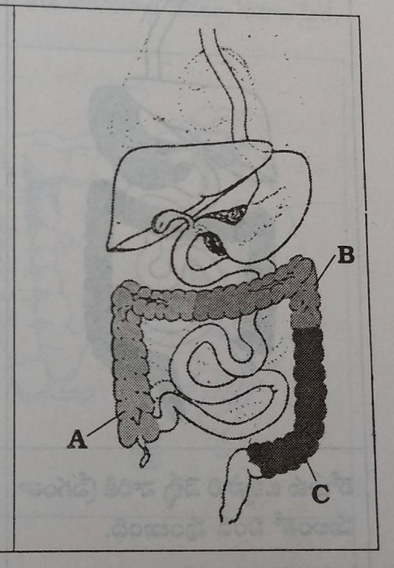
A.Excretion happens the 2 day after tommorow
B.Excretion happens the day after tommorrow
C.Excretion happens tommorow
Its easy through learn the movement of faeces in the intestine with the help of a diagram so lets try this way. For example if you ate three times a day, it gets stored in 3rd part of intestines, it gets excreted the next day, the faeces in the 2nd part of intestines gets excreted the next day. The next day the waste in the first part gets excreted aand few amounts of new waste also gets excreted. That means the waste produced on this days gets excreted in 2 days. It is getting stored 2 days, if this is happening everyday our intestines are filled with waste everyday. If it is staying for 2 days means it is produced by 3 meals and extra snacks.
In people who excrete once a day, intestines gets filled with these faeces
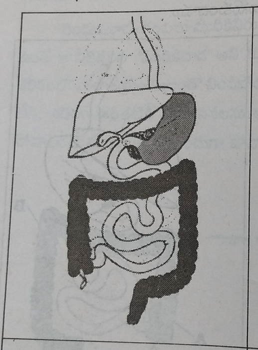
In people who excrete once in 2 or 3 days the intestine gets filled and is swollen
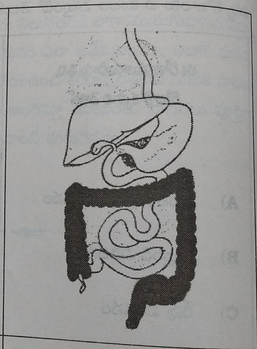
In people who excrete once in 2,3 days the intestine gets filled with the waste produced by 4 breakfasts,8 lunchs and many other foods, there won't be space for the air to enter and the intestine gets enlarged as shown in the figure. If you ar excreted once in 2,3 days the remaining faeces gets stored, we spent years like this. Since the time this faeces started storing, lets learn in detail what diseases it cause, how does it gets enlarged etc.
Due to storage of faeces the large intestines gets enlarged.
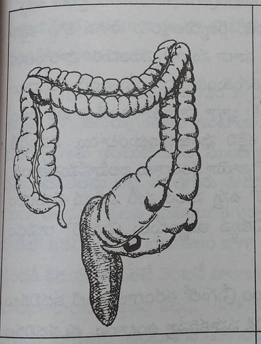
Large intestine gets infected and enlarged.
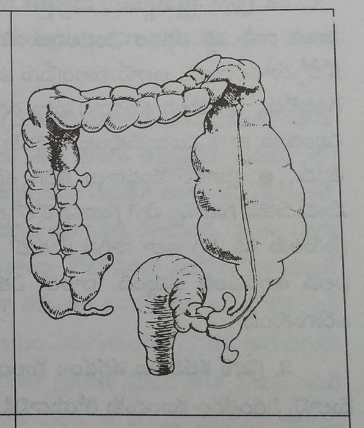
1.Enlarged large intestines:Our larg intstine is 2.5 inches wide.As the faeces is getting stored in for days, itis getting enlarged.In some people the width of large intestine is abnormal and it varies from 5 inches to 8 inches. In constipation the amount of faeces getting stored can be 4-8kgs, it can be even more in some people.One person used to tell that he had a good excretion, when we see his intestines in autopsy it has almost 10 kgs of faeces. If we are storing this high amount of faeces our intestines keeps on enlarging. The above picture shows enlarged intestine due to storeed faeces. As the faeces gets enlarged it can store more amounts of faeces and further enlarge.
2.Decreased energy of intestines:Since the time our intestine starts enlarging its energy reduces. Its similar to the rubber band which gets fragile after strecthing, in the same manner our intestine looses the capacity to push faeces efficiently. More the strecthing more is the reduction of capacity.Usually the intestines has muscles that contract in the front and relaxes at the end , they regain their energy after pushing through that part, but here as it got enlarged it looses the elasticity and muscles get weak. This leads to further storage of faeces leading to many problems.
3.Reduced peristalsis:The peristaltic waves in intestines pushs the faeces forward, when the intestines contract it pushes the content forwrd and then relaxes, the same happens to the part infront. In this way the faeces moves in the intestines. As the faeces gets stored for long time it looses water and gets hard and sticks to the wall making it stiff, this prevents contraction and faeces doesn't move forward. When the bottle is full of water what happens when you move it?it doesn't move. The same happens with the faeces in the intestines, this reduces the energy and frequency of peristaltic movements.This further increases the constipation.
4.Reduced mucous in the intestines: Our large intestine has mucosal glands that produce mucous, it moves the faeces without coming into contact with the walls of large intestine.The production of this mucous depends on the peristaltic movements, when the intestine is full peristaltic movements reduce, this has low production of mucous. When the mouth is full, mucous production is low, but when you move your jaw the saliva is produced , the mucous in our intestine has the same effect. As the faeces is stored everyday, this mucous layers get pressed with it and this causes damage to the cells that produce mucous.As the faeces completely fills, it reduces the little mucous that usually produced.As the mucous production is reduced, these cells get infected and this further delays the movement of intestines. This duplicates the problem of constipation.
5.Hardening of stools: When the faeces are produced they are non sticky and dosn't stick to intestinal wall.Once it gets stored it gets hard.If you plce a leafy vgetble on the stov it gets soft, for 10 more min its quantity reduces, if you place it further more then it turns into a fry.The same happens hre our intestine has warmth du to rich blood supply and it absorbs the water, this turns it hard and dark.The stools produced due to three meals today is approx. 1 kg, if you excrete thrice you excrete 750 gms, in people who excrete once only 250 gms is lost, in people who excrete once in 2 days only 100 gms is lost, it turns hard like pellets it takes 1-2 hours to move in the intestine.In many people as this waste is hard and huge it stops at the anal opening.They try to remove it manually, some exrcete in small amounts like goat, some described that it is so hard. The hardness depends on the number of days it is stored.
6.Sticky stools: It is the mid stage between hardened stools and good excretion.If the food you ate is excreted on 2nd day it has 20-30% sticky nature, on 3rd day it has 60-70% of sticky nature, it turns completely hard after 4 days.This sticky stools stuck to the basin and doesn't go after flushing it. In some it gets stuck to intestines and is painful while peristalsis, you get relieved after excretion.All these problem are due to stored faeces.
7.Faeces getting stuck to intestinal wall: If our faeces gets stored for 2-3 days it gets hard and stick to the wall, it is just same like how our curry gets charred as it looses water after getting cooked for long time. Our faeces gets stuck to intestinal wall just like cement is to a wall or who we spray cowdung on the muddy floor.As the time passes this faeces gets 2.5 inches thick and the lumen gets narrowed, the newly formed faeces moves in the space without touching the walls. The hardened stools that are not sticked properly mix with this newly formed stools are expelled. This stickiness is only due to stored faeces.
8.Intestinal diverticula:
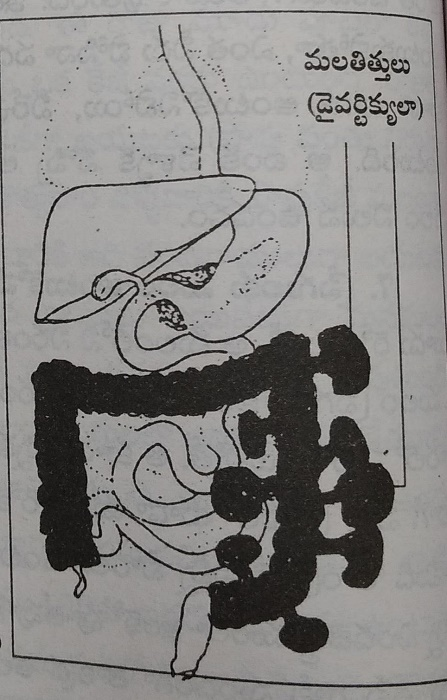
The 1.5 metre long,2.5 inches wide intestine is not sufficient to us, we should be provided with 5-6 m long intestines for our constipation. We get this diverticula in the part that has more storage and reduced movements. When the faeces is stored for long period, the mucous layers get damaged infected and stretched and perforated forming these diverticula. This leads to movement of faeces outside, these diverticula doesn't have peristalsis, it means if the waste enters once their is no exit. This leads to growth of harmful bacteria within, it leads to infection and severe pain to us.If this happens then the intestinal lumen contracts and closes, this leads to lot of damage, it may lead to pus development, fistula, bleeding etc.If the bleeding doesn't stop we need to control it by doing surgery.There are many people with more than 100 diverticulae, all this is due to stored faeces.We should never experience this hell in life. Only solution to this problem is good excretion.If this disease worsens it may lead to cancer.
9.Production of new microorganisms:We can compare our intestines with drainage, if it flows properly it doesn't smell bad and more bacteria is not produced, th iron in it doesn't get rusted and it doesn't loose its hygeine.For example the water we store in a overhead stays clean, but if we stop usage for 10 days we can see insects and algae in it.If the drainage flow gets obstructed by anything, this pollutes the surrounding area with bad smell and mosquitoes, microorganisms etc and further damage the environment. If this damage in occuring in area with proper air and sunlight what damage can be occuring in our intestines. In these places many toxins, bacteria, poisons get released which cause damage to our body, they cause damage to our body and reduce our immune system. If the faeces is getting stored in for 5-6 days this is enough to damage us. You store the food you eat for the time the faeces are in the intestines and see, you can observe bacteria, fungus and many more bacteria. The same happens in the large intestine, our body strives very hard inorder to protect us but fails in the end. Since then we start developing wide variety of diseases in different parts of our body. We tried many things superficially to cure them but the damage is occuring internally, if we stop these medications then we are back at square one.There is no other option other than good excretion.
10.Piles:There are noone who didn't heard about piles. Many people suffer from piles as it is accompanied by constipation. This leads to bleeding.Small sacs are seen near anal opening, some doesn't appear outside and cause harm.It is because these people strain alot due to constipation, straining increases the pressure on the anus mucousal layers and the blood vessels beneath it.The stored faeces prevent movement of deoxygenated blood backward, this leads to enlargement and thinning of the vessel walls.This leads to storage of this bad blood. If we strain this blood vessels ruptures leading to bleeding.As this vessels obstruct the already narrow excretory passage it causes pain during faecal movements.You may feel itchy,tingling sensation,pain in the anus.The faeces doesn't comeout during straining but the muscls come out.You experience them again and again even after getting operated.Only solution to this is good excretion.
11.Fissures:When we are trying to excrete this hardened stools by straining this increases the pressure and thes stools rupture the skin and layers of intestine causing severe pain and tingling sensation at the anus.It happens everytime they excrete so they slowly stop excreting and it further worsens their problem.They get scared to excrete.Everyone of us has experienced this problem at some or the other time.
12.Fistula:Due to stored faeces bacteria get formed, this lead to pustules.If this pustules increase in size it rupture the walls of intestines and the skin and open on the other side and pus oozes out.On the outside pus keeps on oozing.Many people complain the wetness near anus and say it sits to their clothes.All this is due to fistula, we get pain and itchyness near the anus.If you faeces is soft and easy then you won't experience any problem
13.Irritable bowel syndrome: This is the most common disease of large intestine.In this disease the sigmoid intestine muscles gets strecthed and it loses the ability to move the faeces. In this region more amounts of mucous is produced,intestinal peristalsis increases leading to diarrhoea in the nights. In this disease you will not feel hunger,pain and constipation,indigestion,burning sensation and diarrhoea etc. In this people stress and tension is also high. The main reason for this is stress and constipation.Constipation is due to reduced fibre content.This leads to frequent stools after eating. The stools are loose and the main reason for this is constipation.
14.Cancer:After carcinoma of lungs, intestines is very dangerous.It can occur in any part of the intestines, but it is mostly seen in 3rd and 4th part where faeces is stored.The main reasons for the cancer is eating foods that cause constipation like meat and artificial foods and constipation from many years.People consuming meat are at higher risk.The bacteri in the meat produce some fatty acids from it, they also increase production of bile acids and juices from livr. These both acids damage the mucosal layer in the intestine and causes increase in the cancer producing cells. The chemicals that are used to preserve meat are carcinogenic, if the food we eat has more amounts of fibre it pushes out these toxins and bacteria.The carcinogenic changes are mostly due to constipation and changes it cause on intestine.
15.Blood pollution: All the toxins,wastes,poisons produced by stored faeces gets absorbed into blood through water.This waste gets distributed into the cells and cause many diseases. Our cells loose the capacity to take nutrition and grow , they even loose the ability to repair.If this continues we get many chronic diseases.The only cure is to prevent constipation.Till now we learnt what damage does stored faeces cause. The bacteria in the rice,atta,flour is produed from within, even though you put them in a good container and close, they tend to develop. We dry them in the sun to prevent it,this prevents it for long time. Our intestine is also like that, as long as the environment inside the intestines is good you won't experience any problem.Once the immunity decreases or faeces gets stored, it gets worse than the container of spoiled rice.We shouldn't be getting such worse situation. Our ancestors say our body is the temple and our soul is the god, we should protect it.The faeces that is stored in the intestines should be removed and it should be cleaned all this is possible due to good excretion.
21.Microorganisms in the intestines - Bacteria
- On storage these organisms increase - This causes damage to the intestines
- Pin worms in children - Ask them to eating junk food
- They enter from the mud - They absorb blood from the intestines
- You should teach children cleanliness - It protects their health
- It causes damage to mucosal layers - You get sticky stools
- Amoeba lives in small intestines - It can cause amoebiasis
- Change your diet-It helps to overcome amoebiasis
- Be careful of typhoid- Don't neeglect when it comes to its prevention
- You get diarrhoea as a result of food poisoining - Reason, the bacteria that release toxins
- Don't think of doing something after you suffer - Prevention is better than cure
When we put idli batter aside for 4,5 hours bacteria ferments it and make it as their diet and the harmful bacteria grows in it.If we put it aside for a day many microorganisms grow in it, the faeces in our intestine is also the same.The bacteria change the stored faeces in the way that is comfortable to them and they tend to grow inside it. There are many harmful bacteria in the large intestines that damage our health.Lets understand what does this microorganisms cause to our intestines.
1)Pinworms:They are thread like worms which we see when children are excreting.They attach to the mucosal layer of intestines.Female worms lay eggs near the anal opening. That is the reason why the children feel itchy at night.These eggs go out at night. They reach our stomach again through the food we eat and water we drink.That is the reason why we wash our vegetables and fruits thoroughly.
Symptoms: You won't see any symptoms usually as they aren't serious.It is mostly seen in children. They get severe itching near the anus, they don't have proper sleep at night, stomach pain, lack of appetite,urination while sleeping,diarrhoea etc are its symptoms.
Precautions: 1.Avoid feeding them junk food from outside. 2.Ask them to wash their hands after excretion 3. Constipation increases them to a greater extent so try to avoid them 4. Reduce consumption of sweets and choclates and fd your children with fruits and leafy vegetables 5. Do enema for 5-6 days then do this using neem for 2 day in a week, this kills the eggs.Enema water and excretion expells few eggs out.
2) Round worms:They are smooth and round just like earthworms. The grown ones are 7-8 inches long. They are seen in adults and children, we know they are present only when they comes out in faeces.They live for long duration. Because they feed on the digested food in the small intestines.In some people they are present in large numbers that they obstruct the intestines.They come out by vomitings too when they are in such large amounts.They enter our body through the unhealthy food we eat.
Symptoms: 1) Once the eggs break these worms reach small intestines rupture the wall and enter the blood, they reach the heart and lungs. When they reach lungs they cause fever, cough, eosinophilia, they causes skin rashes. Children complain of severe stomach ache the reason for this is not known. As this organisms feed on digested food materials the child loses weight doesn't grow properly, has lack of apetite and stays lethargic.
precautions: 1)Wash fruits vegetables before eating. 2) Ask your child to wash their hands3) Avoid junk food. 4) Try to avoid constipation as this worses the condition.
3 Hook Worms: They are one centimeter long. They get attached to the wall of intestines with hooks so they are called hook worms. The eggs of these worms get laid on the mud when people excretes outside. When people move on the muddy roads they enter through skin into lungs through blood from there they reach small intestines and multiply there. They feed by absorbing blood from the intestines.
Symptoms: 1. As they reach the lungs . 2. They suffer with skin diseases causes itching and causes papules. 3. Presence of these worms in large quantities inside intestines causes stomachache and vomitings. 4. Worms inside the intestine start absorbing blood causes reduction of blood which decreases the body weight 5. Children becomes lazy because of lack of apetite.
Precautions: 1. People with different ages have to maintain personal hygeine, children should wash hands properly after playing games in mud. 2) This disease causes anaemia food rich with nutrients have to be taken.
you might be thinking all this that you are not aware about many things happening inside the body. There are many types of organisms there are only few types discussed here. As all these organisms get excreted from our body and reach back through contaminated food. Teach your children about personal hygeine. Take care that they maintain clean hands. Most important among them is to maintain proper dietary habits as it improves immune system. If your immunity is good your body fights against these organisms on its own. There are allopathy medicines available to cure these diseases but they doesnt provide complete cure. Its better to use them as prophylaxis and reach out to a doctor when your children experiences symptoms.
The above imformation provides detail explanation about worms now we will learn about germs which causes diseases in the body.
1. Dysentry: The organisms responsible for these diseases reaches our body through food and water , they reach large intestines and settle their on the mucosal layers present in the walls and release wide variety of toxins. The mucosal layer gets damaged and develops ulcers.When the disease worsens pus develops. If these bacteria reach in 1 to 10 numbers they cause much harm.
Symptoms:
- You develop diarrhoea suddenly with severe stomach pain
- There is mucous and blood in stools
- Some tend to develop fever,headachee,lack of apetite,fatigue etc.
- Some times we see pus in the stools.As there is loose stools, person stays dehydrated and blood in stools make person lethargic
Precautions: 1.Consume more amounts of water2.Consume coconut water and ors when you are weak 3.Consume fluids that are easily digestable 4.Avoid consumption of proteins and fats5.Go to a doctor when symptoms are severe.
2.Amoebiasis:This namee is quite familiar as many people are suffering from this disease.This caused by entamoeba histolytica, that is why this is called as amoebiasis.These organisms reach our body through contaminated food and water and settle in the large intestines. They are seen in the first part of large intestines where stools are soft.These organisms reach to the glands release certain enzymes and cause damage to the intestines leading to ulcers. Some develop signs immediately, in some it takes few months for the symptoms to appear, in some it infects liver without causing any symptoms.
Symptoms:
- These people experience diarrhoea with stomach pain every 10-15 days and continue for 10 days
- Loose stools with pus and mucous is seen
- You get constipation followed by diarrhoea for 2-3 days and it repeats
- Burning sensation in the stomach and smelly stools are seen
- Tenderness on the right side of the stomach
- Sometimes you may see blood in the stools.
Symptoms when the disease worsens:The frequency of stools increase and it stays with smell, loose stools with blood and mucous is seen. If the number increases to 20 the faeces amount decreases and blood increases in the stools.Sometimes high fever,vomitings occur, in these people the symptoms of liver are seen instead of liver.The pain on the site of liver,fever,pain and swelling are seen.
Precautions: 1.You need to change food habits.These habits are drink more amounts of water,eat easily digestable foods,avoid consuming masalas,sour and spicy foods 2. Drink more amounts of water.See that you excrete properly,as long as the faeces gets stored. 3.Consume fruits, drink juices with honey 4.Avoid consumption of sweets and bakery items.
3.Typhoid fever:There may noone who never heard about typhoid.This occurs as some bacteria reaches our intestine through food and water, these organisma damage the lymph glands in the small intestines. The toxins released by this cause ulcers in this glands.This bacteria travels through blood and reach lungs,kidney,gall bladder.They cause symptoms like fever when they are in the blood.If this disease worsens this causes bleeding. In the same manner we get knee pain,kidney diseases, some type of heart diseases
Symptoms: 1.It starts as severe body pains, headache, throat pain and fever with cough 2.Fever is more in the evenings.It increases more the next day. 3.Fever increases for a week and then slowly decreases 4.Constipation,stomach pain,burning sensation is seen. 5.Fever reduces as a week progresses. 6.In some cases it recur after 1-2 weeks.
Cure: 1. Complete rest should be provided to the person suffering from disease. 2. light food has to be taken which causes easy digestion. 3. Body has to be cleaned with wet cloth in case of raise in temperature. 4. water should be consumed in large quantities. 5. Depending on the severity of the disease.
4. Cholera: Cholera is a very contagious disease caused by a different type of virus. Person suffering with this disease after excretion should wash his hands properly. There is a chance of spreading this disease if the person touches objects without washing hands properly.Disease can be spread to other person if the person drinks water mixed with the waste material of affected person. Cholera is a very contagious disease which can be spread to another person in a short period and affects severly. This virus enters into last part our small intestine through food material and water and releases toxin which causes the intestine wall to secrete water into the intestines in large quantities which causes the excretion of water through excreta in large quantities. Proper treatment should be provided to the person immediatly after the symptoms. Prolonged period may leads to death.
Symptoms:
- Watery stools start all of a sudden
- Rice water stools are seen
- You lose one litre of water per hour in the form of diarrhoea.
- You lose 7-8 litres of water per day and along with this you lose sodium, chlorine from the body
- Vomitings also occur
- Sunken eyes, Hypothermia, thirst,shallow breathing are danger signs.
Precautions: 1. You should provide fluids to your body till it becomes normal.If you are unable to drink water supply fluids through I.V 2.Maintain a safe distance from these people 3. In order to prevent this disease see that the food and water you consume are clean 4. Don't excrete outside 5.People in endemic areas should boil the water before drinking.
5.Diarrhoea:It happens due to many reasons like bacteria, viruses , other microorganisms mainly.Sometimes when we are travelling and we ate in a restaurant and we get vomitings and diarrhoea in an hour.The reason for this is eating stored or spoiled food. The bacteria in these foods release wide variety of toxins, so we experience the changes immediately after eating, this is called as food poisoning. The bacteria that reached the intestines through food reaches the intestines and release toxins, this results in release of more amounts of water causing watery stools.In this loss of more amounts of water may turn dangerous.
When you go to a new place, you may experience diarrhoea, this may be due to change in environment, the bacteria in the intestines increase in number and release more toxins that are responsible for diarrhoea. Drink warm water when you visit a new place, even though it troubles you for 2,3 days you eventually get adapted. This diarrhoea not only occurs because of bacteria or virus it may occur due to some problems within. You suffer from diarrhoea when you have improper digestion and absorption
If you eat good food every day and drink water depending on the body needs and make you excrete everyday, you can remove all the harmful substances from your body and increase the immunity. Prevention is better than cure.Everyone are taking care about external body but they are not bothered internally.Never forget our body has the capacity to protect us, we need it to function properly inorder to be healthy. Internal cleanliness is more important, we tend to be healthy due to internal cleanliness, it protect us.The most important enemy to this is constipation.Lets protect our body by overcoming this.
22.How does fasting cleans our intestines?
- When your intestines is filled with faeces -You should clean this by fasting
- Clean your intestines completely - Till then give rest to your stomach
- You tend to stay hungry post cleaning - You should stop fasting only after that
- Fasting is your responsibility - Your bodys responsibility is to make you healthy
- Follow naturopathy - For a happy life
Even though people are suffering from constipation, they are excreting 1-2 times if they eat good food and drink sufficient water.These waste is getting excreted through the lumen that is empty.If you eat every day and do enema it only cleans the waste produced that day with little amounts of stored ones. The hard stools sticked to the walls doesn't expell if you eat food.First you need to do enema for few days and change few habits so that it gives temporary relief.This happens in everyone.In order to repair a drain we need to first cut off the water supply.In the same manner we need to fast inorder to clean the stored faeces.
Fasting means which shouldn't be eating anything and provide complete rest to our body.If we eat normally then all the blood and oxygen reaches stomach and is involved in digestion, it doesn't do cleaning or repair.Inorder to do them we shouldn't give any input.Our intestines is completely filled with faeces, it should actually fill with sugar cane wide thing, now it is so narrow that even pencil doesn't fit init.Inorder to clean this we need to do enema and remove this and then we can excrete 2-3 times easily.
Inorder to prevent formation of new waste we shouldn't be eating anything.Even fruits and juices tend to digest and release waste.If we stay without eating anything we get weak.So we should something that provides energy but doesn't cause any load on stomach, one such food is honey.It provides more energy quickly without causing any wastage. Using this won't cause any harm, we can fast by using honey alone. The waste ,faeces, organims should move out quickly.We should consume more amounts of water so that this hardened stools becomes soft. The honey is for energy, water is for cleaning.If you do fasting by using them both it helps you alot.
You should consume 2 rounds of water then start doing enema.You can start consuming honey at 7,8 am.You should take a big glass of water, use a lemon and 4 table spoon of water and drink.After consuming honey then you should drink 2 glases of water, after 1 hour should again drink lemon water with honey. You used drink alternately honey water and water every hour till the time you sleep. You won't feel weak consuming them.You can apply mud bandage below the umblicus inorder to increase faecal movements, some experts even massage below the umblicus to improve movement.Some people can suggest tub bath.Inorder to finish this fast , the cleaning process should be complete.It depends on the damage occured. You tend to feel hungry once all the cleaning has been done. Till then honey water meet your energy demands.This fasting can be done for 15-20 days, in some it may even take 80-90 days.If you are not hungry for that long it means your body is filled with waste.
If you do fast and enema in 4-5 days the stored faeces soften and expells slowly in 10-15 days. In the last few days of fasting the faeces expelled are hard, with very bad smell and are sticky. In people who come to us to fast it takes 30-40 days to clean,in some it may even take 60-70 days.Even though these people didn't eat anything this long they excrete faeces even till the last day. In one person on day 90 half kg of faeces which is black and smelly got expelled.In one person on 40 th day of fasting a feet long hook worm got expelled.In many people small round shaped pellets 20-25 in number gets excreted,As the duration increases the stored old faeces gets expelled.I made many people fast, they all say that where did we store this huge amounts of faeces all these days. Many people used to spray perfume on their hanky and go to washroom. This faeces is stored since long period so it causes very bad smell, noone can use it till 1-2 hours.It happened to many people,they say they never smelled something so bad till date. In one person approx. 4 kgs of faeces got excreted.In some people they don't excrete anything till day 30 they feel they are clean, all the faeces gets excreted once on day 31.So the fasting is not in our hands, it depends on the waste in the intestines. If you are too weak you can stop fasting by consuming coconut water or sugarcane juice.
Once the intestine gets cleaned you tend to excrete 3 times a day.Everyone should do these type of fasting atleast once in lifetime inorder to clean their intestines.In this fasting not only intestine gets cleaned every cell of our body gts cleaned.Even though it has many benefits, it has few strict rules to follow.
First one: Whenever you want to fast you are not allowed to do it at home.If you get any problem you will be at loss, there are many problems when your body start cleaning.Naturopathic centre has doctors who can help you, in these centres you can fast without any trouble. You can go and do them whenever you have 1-2 months of time. Till then do enema once in 15-20 days and follow diet.Don't try this at home.
Second one:Inorder to do fasting you should follow diet since 5-6 months. Stop drinking tea and coffee, eat sprouts as breakfast. Eat brown rice and curry which lack salts and oils, stop consuming meat, eat your dinner early, drink 5-6 litres of water everyday, prepare yourselves mentally then come to the centre.Following these rules for 5-6 months cleans your intestine by 50% remaining cleaning can easily be done by fasting.This is the best method, i hope you agree to do this method.
Till then if you fast atleast once a week using honey water and water it is best, you should mix honey and water for atleast 5-7 times. You should drink atleast 6-7 litres of water.You should consume 200gms of honey.You should do enema on the day of fasting and the next day.If you feel little weak till evening you can consume honey again. If you don't feel better you can drink coconut water.You shouldn't consume tea,coffee,tiffin,milk,prasadam on the day of fasting.We are eating everyday, how can we call it fasting if we eat even today? Once a week fasting provides rest to the digestive tract,our body and soul. That is the reason why our ancestors asked us to fast on auspicious occasions. Lets start following them again, we shall give our body one day rest just like we gave to ourselves. If we make our body happy then it will make us happy. You all wish that you stay happy and healthy right, that is the reason why i am trying to teach you these good habits. These things you should be learning from your parents, i am glad that i got the oppurtunity to teach you and help you in leading a happy life.I Wish we start leading a happy life atleast from now on.
23.How does salt water helps in intestinal cleaning?
- Our body doesn't accept salt water - It doesn't cooperate to cleaning with saline water
- Faeces are not expelled completely with salt water - we should be doing enema for sure
- Our body tries to push this salt water out - It can't dissolve the hardened faeces
- Faeces movement occurs only when our body tries - Only few people get benefitted by this
Consuming salt water cleans the large intestine and it gets excreted as it is after 4 hours and only water gets excreted cleaning the intestines, they may assume it but it is not true.What happens inside our body lets learn in the upcoming topics.
Once you drink one litre of water they get absorbed in stomach and intestines and it absorbs in the blood and gets urinated. As our body takes in water easily so this gets empty easily. If you drink the salt water it doesn't get easily absorbed into the blood then it passes down to small intestines and large intestine. Now the question is why does this doesn't get absorbed so soon.Salt is useless to our body. That is the reason why this particle get absorbed, that is the rule of our body.As salt is toxic we spit it as soon as we eat it.We can't even swallow the thing that we use for taste everyday. Even though our body doesn't accept it , it is a thorn stuck to our feet. That is the reason our body tries to push it as soon as we start using it. The only way to loose it is vomitings or motion.
Consuming salt water and vomiting it soon is called as gajakarni. We think in mind that we supposed to vomit after consuming salt water, so it gets vomitted easily. When we think about excreting we won't get vomiting.Inorder to reduc the damage caused by salt water our body sends some water to dilute it.When we add water to any vegetable the water from the vegetable comes out inorder to protect it, in the same manner where ever this salt water go our body releases additional water and dilutes it and protects it from the damage. The salt water we drank comes out in 30 min along with the faeces. In first excretion the faeces that is ready to come out near anus mixes with water and comes out, first time the quantity is more. People again drink the water ,then the faeces which is soft comes out along with those water, this time the quantity is less. They drink in the same manner till only water comes out, they feel that their intestines got cleaned, but this is absolutely wrong.
When our bike silencer gets filled we use kerosene to clean it just like we used salt water to clean our large intestines.We initially pour kerosene move it a little then pour out we see black coloured carbon containing fluid,next time black colour reduces, if you do it for 6-7 times you see only kerosene coming out the last time, we feel that it got cleaned.Now cut open it you can find many carbon particles stuck to it, that is the reason why we heat it and open and clean it. Kerosene cleans it only to some extent. In the same manner even though you consume salt water 6 times and excrete till white water gets excrted,the stored faeces isn't gone. The faeces didn't come out because, salt water is harmful our body is in the urge to push it out, so it didn't try to push faeces out.For example when we are on road and it started raining suddenly we try to find a shelter but we don't see whether it is a hut or building because that is not the right situation. For any waste to get excreted out our body needs to be calm. How can we be calm when we are suffeering from diarrhoea? Our mind is trying to protect us from salt water so it doesn't focus on excretion.
People with severe constipation even they do enema twice a day along with fasting for 20-40 days only a small amount of waste comes out. Till then even if we use neem water, lemon water or anything else with water it is of no use. There is no use if you drink salt water or use it for enema. Our body should try excreting it there won't be any use till then. It is taking days while fasting, how did you assume that it comes out in 4 hours. For example people sell fruit baskets on highway fresh fruits are present above, we feel its cheap and buy them we will know the reality once we go home and check.In the same manner salt water consumption is useless and we will learn it by experience.
24.Cleaning intestines with enema
- Your body glows on the outside - Intestines are worse when they are opened
- Medicines cause damage to the intestines - Enema benefits us
- You can easy learn the technique - You can do on your own
- Learn doing enema - Get rid of constipation
- Don't use soap water - It causes damage to intestines
- You should use luke warm water to do enema - Sometimes you can use neem water
- Do enema once a day - You should do this on an empty stomach!
- If the stored faeces doesn't move - We should move these faeces by doing enema
- Every house should have enema box - You should only when need
Cleanliness is very important to human. We maintain our home clean.We see that the clothes we wear are clean, we clean our vehicles,we keep our body clean externally but we are not bothered about cleanliness within us.In people who don't excrete regularly their lumen gets obstructed just like drain gets obstructed. The house we clean everyday is again cleaned during festivals. We also give our vehicles to servicing. We are not cleaning the intestine even in the name of festivals instead we are causing further damage.Our intestine is neither getting cleaned on normal days or on festivals. We aren't cleaning it once in 12 days. The septic tank that holds our house hold waste gets filled in 10-12 years then we clean and dry it for 2 days.Our intestine is not getting that lucky, our intestine is worse than that.We can ignore if someones intestine is filled but here our own intestine and body part is filled and we are facing problems.Atleast try to clean this now, lets understand whats the best method to do so.
There are many methods to cure constipation of them castor oil, tablets , homemade medicine are important. People usually take early in the morning or before sleeping. Using any of the above makes the water move to the intestine this leads to 3-4 excretions. But all the faeces excreted is produced before 1-2 days. Is it called cleaning if 2-3 days faeces is removed? When does the old faeces expell? It won't soften or released.Using medicine causes diarrhoea for 3-4 times but this leads to weakness. This is because diarrhoea reduces body water and also the sodium potassium levels in the body.People use them for a day or 2 but they can't use them for long as they cause weakness. So these methods aren't the ideal ones.Enema does this cleaning without causing much harm to the body.
Why is enema good:
- No medicine is used here.
- The water we sent in moves the faeces outside.The water from the blood isn't lost.
- Body salts aren't lost.That is the reason why we won't experience weakness. You can use it everyday, as we can do everyday the stored faeces gets excreted.
- It takes 2-3 hours for the excretion to occur when we take medicines. In enema the faeces moved in one go comes out in 10-15 min.There is no need to go again.
- The good bacteria in the intestines are lost due to medications, there is no such thing with enema
- It cleans the intestine completely
How can we do enema: It is of two types one we can do on our own and the other we can take help from someone.
The method where we can do on our own: This is the easy method.First we need to wash the enema box and apply coconut oil to the pen like thing which we are supposed to place in the intestines.Before doing enema we need to sleep on the floor on one side with legs folded. You can do this in washroom if there is sufficient space or else you can do this in your bed room. You need to fill this box with water and place it on the floor and place the pen like thing 2 inches into the anus,now you should hold this box with left hand as high as you can. If you can't feel the water flow inside you should place the tube properly and then hold the box. The water enters inside completely in 4,5 minutes.Once the water finishes, you can stop and go to washroom.
There is another type in this, people in whom the water doesn't enter properly can do this.See that you get a placee to hang this box at a height of three inches above the level where we stay.Stand and place the tube into the anus and now lift the box and hang it their and then sleep on your right side.If water doesn't enter properly hold the tube with lft hand move it inside and outside.That is the difference.You can do this at present and learn the above method with experince.
How to do this with someones help:We put a carpet in bedroom or bathroom.We stay inside the room and the other peron stays out holding the enema box.The rubber pipe is sent inside through a whole in the door or beneath it.Outside person cannot see us.He should fill the box with water and place it down, we will place the tube inside and ask him to lift the box, the water enters our intestines.The person on the outside can see it.We have to tell him not to put the box down untill water gets finished.Once the water is finished we can remove the tube and use washroom this is easy method, finishes fast.
If you are obese or suffering from joint pains and can't sleep on the ground.You can sleep on the diwan or you can stand in the washroom and hang the box at a height.You can do in any way what is important here is water entering the intestinees.Above mentioned once are easy methods.
Once you remove the tube from the anus you can control for 3-4 min and go to washroom.It make tak 10-15 min for the water to excrete. We should stay inside for 10-15 min. Some faeces can come out after sudden gush of water.After sometime when water flow stops just get up press below the umblicus and it gets excreted, then small amounts of water and faeces get excreted. We repeat the same after sometime.We should repeat this for 2-3 times this moves the faeces outside.This is what we call enema.
Which type of water to use in enema:Hospitals use soap water to do enema, this is a wrong method, they cause damage to the mucosal layer. Doctors can add soap because they use it rarely so its okay. But you can't use them everyday.They mix many medicines and send them inside through enema.We shouldn't be doing this, we shouldn't mix any medicine in this water.
1.Luke warm water: You can boil 2 litres of water and cool them to warm temperature and use them for enema when you suspect microorganisms and other harmful substances.You should use these water everytime you do enema.
2.Lemon water: You can add lemon juice to lukewarm water and strain them so that any particle doesn't enter. We shouldn't be using these water everyday, we use once or twice.The sourness of lemon activates the mucous glands.In people with constipation the mucous gets thickened and mixes with stools and makes them sticky. This reduces their thickness.
3.Neem water: Put 2 litres of water on stove and add neem leaves to it and allow it to boil. Then allow it to cool then strain these water and use them for enema.Initially you are supposed to do with luke warm water and then do for 3-4 days using neem water, then do using normal water for 4-5 days, you can repeat with neem water if you feel necessary.Neem leaves have antibacterial effect. This kills amoeba, harmful bacteria, worms in the intestines or pulls them out.It helps in protection against them.
Note:The water we use in enema should be luke warm not boiling.Increase in temperature damages the intestines and the mucous layers.
When should we do enema: You shouldn't do enema whenever you want. You shouldn't do when your stomach is full. You should do this 30 min after drinking first dose of water.Till then the water we drank reaches blood.If you want to do in the evening you should do when the stomach is empty , when you are feeling hungry.Its sufficient if you do once a day. If you are having any trouble in stomach or pain you can do this in the evening too.
Who should do enema?:
- There is no need of enema in people who excrete 2,3 times a day
- In people who excrete once completely it is not needed. If they change their diet they can get results in 2-3 days.
- Even though you are excreting once a day but in small amounts in 15-20 min , you can do enema.
- You can do enema when you feel their is faeces stored inside even after excreting 2-3 times or once you can do enema.
- Even though you are excreting once a day but without proper timings
- People who are excreting once in 2 days or once in 3-4 days should do enema everyday for 20-25 days.
- You can also do enema when you feel lack if appetite
- People with pin worms and hook warms and itchy feel near anus should do enema.
- You can do enema when you are suffering from amoebiasis,enlarged stomach, bad smelling gas etc.
- People with piles,fistula and fissures should also do enema but be careful while inserting the tube
Above mentioned people can do enema early in the morning even though they excrete little or not.Everyone should do this for 10-15 days.People with severe problems can do this for 20-25 days or even a month. There won't be any harm even though you do this for period. You can consume your routine diet.
Do we not get used do if we do everyday?:Many people come to me asking the same doubt. As the faeces are not moving properly we take the help of enema. Some people may think you get used to it if you do this for 15-20 days, no nd to worry about this. What is the need of enema when you can drink water twice a day? You can excrete by using water. You use a stick when your leg is not good, once you are fine you stop using it.It is just the same.
Lets clean our intestines which we neglected since years and eat good food. Doing enema for 10-15 days empties it by 50-60%, since then the faeces produced by the food we eat exits everyday.Since then there will be no newly formed faeces storage. In people with constipation for years doing enema for 20-25 days won't suffice. It only cleans by 50-60%, inorder to clean the rest you should start fasting. First 5-6 months you should follow diet and do enema and then start fasting.You should start fasting when you find 1-2 months in naturopathic centre. First you start using enema box, it should be among the basic items present in any house.You can use them when you have constipation or stomach pain you can do this everyday if needed. It is an health need.
Note: You can buy it in surgical shop easily in your locality.One box can be used by all members of a family, you can buy different tubes if you are not comfortable.
25.Doubts- Solutions
- If you excrete first - You can meditate later
- People who work hard consume more amounts of water -They don't have any trouble excreting
- Its not once in two days -You should excrete twice everyday
- The water that enters in the intestine softens the stools - It pushes it outside
- Excretion immediately after you wake - It is an example of a good excretion
- Raw food gets easily digested - It moves easily inside the intestines
- Our ancestors never experienced constipation - You can get rid of this if you wish
- Turmeric acts as medicine to hook worms - They excrete along with stools if your system is good
- Why use tea and coffee for excretion -When you have water for this!
- There is no loss in doing enema - Faeces gets excreted easily
- If you are straining for excretion -Get rid of this using enema
- Stools of different colours - Don't get scared its not a disease
- Change your diet and thought - Its time to stop this constipation
- If you excrete properly - Nutrients from the food gets absorbed properly
- Water consumption helps in excretion - Your faeces move only when you drink water
1.Is it better to meditate immediately after waking up or after excretion?
Answer:Many people are addicted to do meditation immediately after waking up,they do everything later. Our soul and the waste has close relation. Immediately after we wake up our intestinal nerves gets loosened. If we try immediately after we wake up we can excrete better. We feel as if we lost much weight. As our intestines become empty wee can take in deep breaths.Number of breathes decrease more after we excrete.If the rate is less we tend to remain calm. Our mind can easily meditate.
Since the time we wake up to till we eat breakfast we have to drink 2 rounds of water, instead of doing this post meditation you can do this before , you can drink water after you wake up and do meditation after excretion.There will be sufficient time for other works too.Your mind stays calm this way.
2.Is there any difference in excretion in people who do physical work and people who don't?
Answer:Inorder to digest the food we eat and to excrete it properly, we need to excrete. If people work actively blod supply to the muscles improve, all the organs work actively.In the same manner the intestinal muscles become active and the peristalsis occurs actively. As the muscles of abdomen work during excretion they tend to be strong. People who wom't work hard, people who sit and eat and people who take bed rest has more chances of constipation.
If we think about the second reason people who work hard eat more, more amounts of waste is produced and it moves easily in the intestines.When water is more in the overhead tank flow is more , when it is less the flow is less.In the same manneer peopl with less work eat less, waste is produced less, it takes time to move in the intestine.This is the reason why labour excretes 2 times a day.These people consume more amounts of water, it also helps them in excretion.
3.Can i do excercise and yoga in days when my motion is not free?
Answer:When you feel heaviness and pain in the stomach you can stop,otherwise if you are comfortable you can do these asanas, pranayama and excercise but the air doesn't enter so well and you can't hold asanas for long time like you do after excretion.Its better you do them because they cause intestinal motility and you can excrete post excercise.
4.Is it good to consume water with salt and sugar?
Answer:We should drink a glass of water slowly in 15 min just like coffee.If you feel even then you can drink these water with salts and sugar.While drinking water you should warm the water and drink them slowly.
5.Some doctors say that if you urinate everyday , then it is okay to excrete even once in 2 days to what extent is this true?
Answer:It is as important to excrete as to urinate.You get adjusted when you can't get it just like a beggar feels its okay to eat once in 2 days, he feels blessed that way.We are in the same thought about it. Previously doctors used to ask their patients are you excreting properly, noone is asking these days, they didn't think about it. I don't understand why doctors consider that its okay to do so. Some people did a survey to access which profession people hav contsipation more, i read this once, it shows that doctors are suffering from this mostly.I understood that time why they consider it okay.You should excrete twice in a day otherwise it causes more harm.
6.Is it neccessary that people with constipation drink warm water? or they should drink cool water?
Answer:Fridge water aren't useful.As we drink almost a litre water it moves and dissolves atleast 100ml of water enters the large intestine and moves the faeces.You should drink water of the well rather than warm watr.When the temperature is cool you can use luke warm water,its better you avoid cool water.If you drink cool water our stomach tries to warm it and water stays there for long time and stomach and intestines absorb more water, the amount of water entering the large intestine reduces. You can drink luke warm water when you are suffering from burning sensation, irritation.For constipation you should drink water at once inorder to increase pressure.
7.Is gas trouble and sour taste related?
Answer: In reality there won't be any relation between gas trouble and sourness. Increase in gastric secretions cause damage to the mucosal layer. In some people these layer develops ulcer and they feel burning sensation and pain when they consume these foods. Inorder to make excretion proper the harmful bacteria in the intestines increase in number.They cause damage to the mucosal layer.This is the reason for increased gas production and burning sensation. Once you start consuming 5-6 litres of water you can use lemon and other sour foods in 1,2 days. As the excretion happens regularly, gases aren't produced in large amounts. You feel at ease in 5-6 days.
8.Can people with the habit of consuming castor oil continue it?
Answer:If you are following the above method and excreting twice a day there is no need of this.If you are not following this and there is much damage within the intestines or you are suffering from constipation you can relieve this by drinking castor oil. You can continue if you are habituated, people who are starting fresh can have diarrhoea and weakness as they lack the knowledge about how to use this.
9.If i feel like excreting immediately after waking up can i do it? or should i do it after drinking water?
Answer:If you are experiencing this you are very lucky, if it is urgent its better you do this.You can drink watere after you finish this or after brushing you teeth.Its okay if you didn't drink 1 litre water when your system is this good, you can drink them slowly in an hour.This further cleans your urine. But the second time you should drink water at once so that your second round of excretion is done. In some people they don't feel the urge to excrete but they feel like urinating, you should start water consumption post urination.
10.Consuming boiled food is good for excretion?or raw food?
Answer:Raw food is better as we can eat it in large quantities.It gets digested easily and moves in the intestine fastly.It doesn't wait for our call, it calls us to the washroom.More amount of waste is produced.But when we consume cooked food, it doesn't move fast in intestines, it doesn't digest easily and move easily.Its like an old car which sleeps when we didn't care.This spoils our nights sleep.
11.Is constipation hereditary?
Answer: It is not hereditary.We see people in our homes spending long time in washrooms and excreting once in 2-3 days, there is no need to mention we get to notice this things.If your grand son gets constipated it has nothing to do with his parents or you.Some people say that every one in my family is constipated we have it hereditary, but there is no such thing. Constipation isn't hereditary, they are due to food habits.If your elders have the habit to eat meat more or eat curry less and more rice or to consume pickles or drink less water you tend to learn them .you teach them to your children and your grand children.They even proudly say that my grandson has my habit he can eat well and digest like me. According to me its just the habits not hereditary, You turn to constipated family just like sugar family,asthma family etc. Your habits change then your diseases cure. There is no need to trouble them. You should make all your family members to drink water everyday in the morning.
12.Doctors say it is not good to do enema everyday?Is this true?
Answer: In some people drinking water doesn't help so they do enema.If you do this for 10-20 days all the waste gets dissolved and comes out and your intestine gets cleaned.Nowing this your family doctors say it damages your intestines.
There is a difference between the enema doctors do and we do they add soap water or glycerine or few medications and do enema.They don't use warm water, they use medicine so that it removes more waste in less span.As it is harmful they do this only in emergencies.Here we are using luke warm water and we are not in a hurry to remove these waste, you can do this. They may say that it is harmful as they aren't aware that we use warm water. It doesn't cause any damage.
13. Does consuming turmeric paste kills hook worms? Can we prevent them?
Answer:Turmeric is called as natural antibiotic, people say that consuming it early in the morning kills worms.It may have such quality but it can't prevent them from developing.No medicine can do this.If these worms stay for long time they produce offsprings , these medicines kill them.this method goes on. They aren't seen if we use medicine or turmeric , they come back once we stop using.Inorder to stop them you should see that you excrete 2-3 times everyday.They increase in number when the faeces gets stored.
14.No book ever mentioned that we should excrete 2-3 days everyday,noone has ever told this.I felt may be it is not normal?
Answer: No doctor or guru never mentioned this because they may not excrete that many times.They may excrete to a maximum of 2 times that is the reason it is written once in these books.When you are teaching new things it leads to many doubts, we can't believe this. I never saw any animal eating vegetaraian food excreting once a day.This is the quality of veg food.As we didn't do it till now we find it funny and new.There are many people among us who lead an abnormal lifee.Many humans are addicted to taste, and unnatural habits they tend to think natural things as unnatural and vice versa.This never changes.
15. Some people tell that they excrete only after consuming tea,coffee, ciggarette etc is this true?
Answer:These things doesn't have the capability.Many people consume them immediateely after waking up the medicine in this innervates the nerves.So nerves won't get relaxed this may lead to constipation.Coffee and tea makes us stay more time in the washroom.If we practise excreting without consuming them we get habituated in a month. When these people don't get tea on time, their mind and mood gets diverted here and when the mind is foccused on a thing it doesn't focus on excretion.This impacts excretion.Then even though you drink tea you may not excrete, this makes us blindly think that without tea we can't excrete and it stays so. Except this there is no relation between tea , coffee and excretion.Drink water and see how it doesn't come out.
16.Can we make it a habit to do enema even though we are not constipated?What happens if we do so?
Answer:It is important that every one learn to use it .Even though it isn't important now it can be used.Buy an enema box and try to use it so that it becomes easy and you tend to be confident about using when you are facing troyble like stomach ache.You can do fasting for 1-2 days when you have fever and do enema during that period.This is a very good habit to learn.
17.I feel weak whenever i excrete in large amounts, why does this occur?
Answer:Everyone of us has experienced it atleast once in life when we excrete half to 3/4 kg of faeces.It is because the nerves that hold it release it and our abdomen goes inside.We feel as we lost something and we think this as weakness.For example whenever we go to a market we bring heavy bags, we don't feel anything while carrying it but once we put down our hands ache in a moment.It is the same.
18.At what age can we start doing enema?
Answer: You can start doing it by th age of one.You usally see that child in the age of 1-4 strain a lot, we can use this method for 1-2 days for it to go.It is that faeces in the intestines gets dry.You can use 250ml to 500ml for on time in children.
19.I can't excrete when i ate this raw food and i feel like indigestion.There is even difference in the stools.Why so ?
Answer: The difference in the stools is just like the difference in the raw and cooked foods.The raw food can easy move in the intestines and is less exposed to the heat of intestines so its texture and colour remains the same.But boiled can't be moved fast so this stays for the long time in the intestines so it gets dried up and expelled as thick mass.If you didn't digest the raw food properly, you may see the indigested faeces.
20.Previously whenever i excrete the faeces used to be in same colour, now it is in different colours everytime is it any fault?
Answer: Previously you use to excrete once now you are excreting 2-3 times it is th reason, the change is the reason.Once the faeces gets stored for more than 24 hours its colour starts changing, we saw this stored faeces these days.Now when we are excreting 2-3 times a day this is not stored,it is excreted in the way it is produced.The juice you drink in the morning , the lunch you eat and the fruits you consume all get excreted in different colours.As you see different colours you might be thinking something is wrong.There is absolutely no fault but you can clearly appreciate old and new faeces by the colour.
21.Even though i excrete 2-3 times a day i tend to fart with bad smell why so?
Answer:When you eat non veg, it takes long time to digesta and produce more gas.We use coconut and sprouts mostlywhen these sprouts doesn't germinate properly they take long time to digest.the roots should be 1 inch tall so that it easily digest by producing less gas.There are chances you produce gas when you don't swallow properly.It is not any disease,the smell goes away on its own.There is no need to try anything.
22. Is there any chance for the complete reduction of constipation which i am suffering from many years?
Answer:If you can change your diet it gets cured in 95% population.In chronic constipation where the intestine loose the ability to contract and relax you maynot see much results.But we can make sure others excrete 2 times even though they are suffering from constipation since long time. Some may think it is from so long how can it reduce, there is nothing that can't be changed if you change your diet,water habits and thinking.
23.Some people excrete once in 10,15 days but eat normally, where does all these wastes go?
Answer:There intestines lost the ability to push the faeces.Initially they excrete once in 2-3 days then it increases to 5-6 days at th end they don't excrete even after 25 days.The faeces is getting dried up and is getting hard.If you fry a leafy vegetable for long it gets dried and hard and sticks to the bowl in the same manner the faeces stick to the intestinal wall.As the faeces get stored the intestine enlarge and provide lumen for faeces.Even though they eat more number of times it gets hard and dry and reduces in amount,as these people are adapted thy don't feel any problem. This is a luck.The faeces which doesn't stick to the wall gets expelled as hard pellets.
24.I excrete only once a day. If i eat papaya at night the faeces in the morning has that smell.Does this mean i am not suffering from constipation?
Answer: In people who excrete once a day the old faeces stick to the wall and new one passes through the space in the middle.When you papaya you tend to excrete it first as it has more of mucous in it.because of this it moves fast without sticking to the walls of intestines. It overtakes the faeces of other foods and moves first,even though it doesn't come out your faeces can smell likee that.Its not great to have this only a day or only eating papaya.This doesn't mean you don't have constipation.
25. As you told if the second round of excretion is not possible can i try it post lunch?
Answer: Everyone doesn't have this facility to excrete after lunch, its okay if you are at home or a place where you can use a washroom. If you don't excrete 2nd time in the morning your stomach feels heavy and you won't feel hungry, you feel better once you excrete.You can drink 1litre of water when your stomach is empty and try excreting.If it is not possible then eat lunch and you can excrete with that pressure, if not try later in the evening.If you stop eating , it won't create any pressure. As you have the water technique you can try it.
26.Benefits of good excretion
It is more important to leave the waste that our body doesn't need. Ayurvedic science tells that all diseases come from the faecesIn order to stay healthy we ned to have a good excretory system.Till now we learn what should be done inorder to have good excretory system.Now lets learn what are its benefits. Since the past 7,9 years i practised and experimented on many things related to excretion and make many people follow them.Many people got good results, many wrote letters about their experiences.All these common problems are gone when you follow few things, you understand thm with experince.I hope you all follow these rules and become healthy.
1.Belly size reduces:People with contsipation slowly lose the ability to digest food, there stomach tends to remain heavy.Because of this reason your stomach tends to increase in size.Faeces which are stored are also a reason for this.When you excrete you feel at ease.If you don't excrete you see that your stomach bulges,this may be due to stored food and gases, the size reduces as you excrete.You get good results, and you can reduce your weight.
Dr.manthena changed my lifestyle
My name is masthan rao aged 51 yrs.Its my luck that i met doctor manthena satyanarayana raju.
Before going to america 2 years back, me and my wife met him and we learnt about his new technique, i learnt in water technique,food habits and followed them.
"The greatest truths are the simplest"I felt that the naturopathic techniques he taught me are easy and effective.I felt that i should never loose this health and practised these methods even after i went to america.Me and my wife are healthy and happy.You understand the change it caused in me by reading below paragraphs.
I used to suffer from constipation.I used to sit for hours in washroom but used to not excrete, i used to read the entire newspaper waiting for it.I used to spend 50-60k eveery year due to my skin allergy.I used to suffer from frequent coughs and colds.I am obese weighing 95 kgs.I had a habit of smoking since 8 years of age,i used to smoke few packs everyday, this lead to illness along with mental tension.Irritation and anger slowly increased.This is my history in breif.
I started consuming water, followed diet then my halth improved a lot in 2-3 months.Constipation got cureed, allergies are nowhere.I stopped smoking and will never smoke in the future.My colds and coughs are gone.My weight reduced to 70 when me and my wife fasted for the 2nd time. I put down 25 kgs out weight.My stomach which was stretched previously got back to good shape.All the problems of wife got cured and we became completely healthy. We are following this lifestyle since 1.5 years.I eventually developed interest in meditation.Previously i used to shout at my employees, now i am more of a calm person. In this way meeting doctor had changed my life for the good. I got attracted by his selfless behaviour.He helped many people till then.I thought i should do my part for him.
I developed a clarity in life.I worked so hard for so long, i thought for whom!i wanna make my life meaning ful then i got an idea. "one's wealth is not for his greed but for fellow men's deed" i wanted to serve people.I thought i should do something then doctor gave me an idea.He gifted me health i wanted to gift health to many people and on my 51st birthday, august9th 2000 i made Vura Masthan Rao Charitable Trust Inorder to give publicity to naturopathy, i deposied 5 lakh in the bank and used the amount and interest to provide publicity.As a part to this i arranged doctors speeches every month in cheerala.Many people are hearing his speeches since past `15-16 months.We arranged his speeches in bapatla, vijayawada and repalle on behalf of the trust. This trust works to make naturopathy part of everyones life.We are arranging programs every month on meditation and many other topics.We aim to make people mentally and physically healthy.My aim is to make this successful and give it a wider reach, i made this trust inorder to show doctors teachings to the world.
I hope that everyone makes the good use of money and time and remain healthy by naturopathy and doctors way of living just like me and don't neglect their health in this fast generation.
Yours sincerely
Vura masthan rao
Shree venkataramana motor stores,
Muntha vari centre cheerala.
2.Gas trouble reduced:Burning sensation inthe stomach, indigestion,burps , flatulence are included in gas trouble.many people are suffering from this, in this people the excretion is not good we can instead say all this is because of constipation.In people withgood excretion there is no chance of gas production in large amounts.If you are not excreting properly you develop lack of appetite, they eat something or the other without feeling hungry this inturn leads to indigestion and burning sensation.this keeps on adding other symptoms.So drinking water 5-6 litres and excreting 2-3 times a day is important and cures constipation.
3.Increases appetite:They are many reasons for the lack of appetite like indigestion, constipation, liver diseases etc.In children the reason might be ulcers in the stomach, worms or any toxins or eating food at odd times. The main reason among them is constipation.We tend to feel hungry if the food we eat get digested , nutrients enter blood and waste enters intestines and excrete.In case of constipation the digestive juice decrease.In people you won't drink water all the waste gets accumulated and they have no appetite. So if you drink water properly and excrete twice a day you feel happy.
Experience
To dr.manthena satyanaarayana raju, many greeting ,myself ramachary.Sir i started drinking water as you mentioned and this helped me in excreting properly in the mornings.All the toxic gases get expelled
I used to suffer from burning sensation in the stomach and indigestion,I used to have lack of appetite and bad taste.Once i started following your techniques the gases in my stomach got reduced and my symptoms got relieved.I started consuming sprouts and i can feel the taste of the food.My appetite improved.
I can do my excercises perfectly, i feel at ease and happy. I started developing interest in natural foods and no longer crave for tea,coffee,cool drinks and junk food.
I used to pray god for good health, i believe god sent you to cure me.I wish you help many people.
K. Ramachary,
EB-102, Zinc colony,
Vishakapatnam - 15.
Experience
My wishes to all the health lovers.M name is andhe veeramallaya, 57 years old.I read doctors book tips for a satisfying life when my friend suggested me.I learnt few new things upon reading them.Then i bought all his books and read them and even heard his speeches.
I consumed 5 litres of water everyday for 25 days as said by doctor, i even started consuming vegetable juice in the morning and salt , oiless foods in the lunch and dinner.
Previously i used to suffer from constipation, lack of appetite and burning sensation, pain when i ate anything. I stopped consuming pulses as they are forming gases.Since the day i started this diet my day changed.I felt happy and healthy all the day.I started excreting everyday and gas reduced , my appetite came back.Now i can eat more amounts of food and all types of pulses.Consuming sprouts is also not causing any trouble.
My skin and sweat has lost the bad odour.I started drinking more amounts of water this reduced blood viscosity and improved supply further curing skin diseases.
I got a confidence that any disease can be cured if i follow this perfectly, this is because i am a diabetic since the age of 15 and it got cured in 20 days.I started using medicines since i got heart pain in 1998, they told me i need to get operated at a point of time,I slowly stopped using medicine in 3 months of time.Now i completely stopped using and i am able to do all my works on my own without getting fatigue.
This lifestyle gave me mental peace and made me control my anger and diverted me towards divinity and meditation.I developed humanity,love, affection and truthfullness and gave me a goalto reach and is helping me.I started getting a feeling that our ancestors led their lives may be by following these things.
I would like to thank dr.manthena for the drastic changes in my life and for gifting me with health and happiness.
Ande veeramalayya,
Parameshwara nittings,
Thadepallygudem - 534101.
4.It cures ameobiasis: We tend to get diarrhoea once in 10 days suffer from 3,4 days visit a doctor and use medicine and then they again start developing after 10 days.Along with this burning sensation, indigestion and constipation are symptoms of this disease.There are many people who are suffering from this, many people aren't cured they driink warm water upon doctors suggestion.They get scared to consume any food, if their excretion gets better all their problems get solved.Can't you believe this but this is the truth.I wrote about it in detail in this book. Because of this large intestine gets damaged and ulcers develop in large intestines. if you are suffering from constipation it causes further damage.Your intestine can't becured if it is filled.So there will be no use of the medicines.If you startconsuming 5 litres of water everyday you can get rid of constipation this further prevents the disease.
Experience
Hello satyanarayana raju garu
I heard your speech in kovvuru and started practising them.
I am 68 years old i am suffering from constipation since childhood.I used to have watery diarrhoea once in every 3 months.I Used to suffer from amoebiasis, there is no use even after using medicines.I got operateed for piles 30 years back .I am scared whether they recur.
I started following what you told after learning others experiences and got good results.
- Now i am excreting 2-3 times a day if i focus on my large intestines.
- My amoebiasis got cured, especially those bad smelling diarrhoea
- The pain in the anus reduced due to good excretion.Now i am free from the fear of piles.
- When visiting new places now there is no need to use medicines that cure loose motions
- I used to suffer from cold previously now i stopped experiencing this
- The headaches i started to experience are now gone.
May be excreting faeces everyday may be the reason.You can spend a happy life with good excretion
Bikkina Chitteya, President
Walkers club, Kovvuru.
5.Stomach ache reduces:There are many reason to get stomach ache like indigestion, burning sensation, increased mucous production, in children it may be due to many other reasons.In people with good digestion and excretion these problems doesn't arise, so we should see that we have a good system. We are supposed to change diet, eating all the time , eating at odd times, consuming anything cause stomach ache.If you drink water properly and see that you excrete everyday you stop excreting.
Experience
My age is 74 years, i am following doctor manthenas speeches without fail since 2000.I started practising them slowly.I started drinking 5 litres water everyday and 1.5 litres in the morning, this is helping me in good excretion.I am consuming water again after excercise at 5.30 in the morning.It took 10 minutes to excrete.
I am consuming remaining 3 litres of water till evening as described by the doctor.
I am suffering from pain and burning sensation in the stomach from so, it became frequent in past 2 years, i used many medicine since the time i started following his diet i stopped using medicine.I developed good excretion, stomach pain and burning sensation good reduced.My food is getting digested. I believe doctor is a god to me, i am thankful to him.
S. Venkateshwarlu
Mukthinuthalapadu,
Prakasham district-523262.
6.Hook worm problem gets cured:This is commonly seen in small children it can be seen in adults too but now the hook worms won't die soon now.They lay 100 s of eggs .They get expelled out with excretion.If you aree constipated they tend to stay inside and increase in number. So you should take care that you excrete everyday. If it is clean there is less chance that new germs are born.You can learn about them in detail in chapeter on bacteria and worms.Many elders evn told that if we can drink water and get rid of constipation we can easily overcome it.
Experience
My son name is karthik he is nine years old, there is much to tell about him.He suffered from illnesses since his birth.I get scared to travel with him, he develop cold, fevers till 103 degrees and we used to rush to hospitals.Onc hee is grown up he started developing skin allergies when he plays out in dust or with dogs.It never got cured even after using many medicines, he used to have constipation, he used to sit atleast 30 min washroom, it used to smell very bad and he used to have hook worms in it.He used to complain itchyness near the anus at night.Even allopathic medicine didn't help. We met dr.manthena 2 years back, my husband started listening his speeches and got impressed and he started following him.Along with my husband me and my children started consuming water in the morning, karthiks stools bad odour reduced.We told to doctor about him and asked for help. When we asked about hook worms he asked u do enema with neem water and do fasting for 3 days then make him feed with turmeric balls early in the morning for 3-4 days.Since thn we observed much changes in him.He got his appetite back, his constipation got cured, his itchiness is gone.I made him to drink vegetable juicee in the morning, fed him with sprouts , gave him more of fruit juices.Even our kids started feeding on salt less foods along with us.Since then we took him to hospital very less.his fevers arenot frequent, his cold has reduced to 90%.Even though he faced minor troubles he never got sick. In this manner doctor manthena helped us and gifted us with health.
K. Durga,
Flat No. -14, Sundhar nagar,
Hyderabad.
7.Bleeding stools:There are many reasons for blood in the stools like piles,fissures,ameobiasis,blood stools and many more.Mostly piles are responisble for this, it is due to constipation, that is the reason why curing constipation stops piles and bleeding. Ulcers in the intestines also occur due to constipation they cause bloody stools. Fissures means the skin near anus gets teared as the blood vessels gets torned you get bleeding.These people stop excreting in the fear of excretion.Drinking water prevents straining and it gets excreted easily.
Experience
Greeting to all the elders
My name is katta nagachaitayna im 10 years old.Since 3 years i am experiencing blood in the stools.I used to sit for long time before excreting i consulted a gastro enterologist in rajamundry and vizag they did sigmoidoscopy once.They didn't tell me the reason.They asked me not to sit for long in the wahroom, in vizag they did colonoscopy and didn't tell any thing.I met dr manthena 3 months back , i called him after reading his book and he answered me on phone.he asked me to drink 4-5 litres of water everyday and bath with cool water in a tub for 15 days. Since then blood in the stools reduced.I used to drink water and excrete in no time. Allopathy caused much trouble, they told there is nothing even after all that, but doctor asked me to drink water since then bleeding stopped.Now i am free from all the problems.I started excercising and did pranayama everyday.If i stop drinking water i bleed again, i request everyone to consume water.
K.Nagachaitanya
Kinnera delux, Kakistreet,
Srikakulam - 532 001.
8. Piles pain decreases: They are also called as haemorroids. If you don't excrete daily your faecus hardens and increases the pressure on vessels in the intestinal wall. As the blood can't flow through them they stretch. Due to straining they get ruptured and you develop bleeding even though blood does't come but small sacs are seen through anus. They are called piles. They cause pain, itchiness etc. If you can prevent constipation you can prevent piles. Eventhough you can't cure completely you can stop developing symptoms you should change dietary habits, Waterhabits, eat fibre containing food, eat fruits etc. You can do tub bath when you feel severe pain. If you dont feel pain but experienc bleeding you can bath with cold water.
Experience
My name is ravi and iam working in shanthinikethan residential school and i used to eat food in hostelwith students. I am suffering from constipation. from march 2001 iam suffering from piles with severe pain.
Luckily when my school typist prasad told about doctor Rajus speech i started practising from the next day.I got rid of my problem after following this procedure for 2days.I started following naturopathic method which doctor had gave speech about.Presently iam following this method by eating food without salts.I felt suprise to believe that i lost piles problem which i been suffering mentally from many days.
Thanks to the doctor for restoring my health.
Ravi, Teacher,
Shanthinikethan high school,
Gaagillapur, Hyderabad.
Experience
To dr.manthena satyaraju from poludas ramakrishna.
Respected sir,
I been started practising the method from past 8months which you have given speech about constipation in chirala I.M.A hall. Started attending your speeches everytime without any absence.
Before i used to suffer from piles and had severe pain in my legs, i consulted many specialists and started using many antibiotics but of no use thenafter i started using many homopathic medicines which are of no use. Before taking bath i used to sit in my bath tub filled with hot water as they told but it is of no use.
I got rid of the many problems in few days after i started practising the procedures which you gave speech about naturopathic method.
I used to wake up at 4:30 in the morning and used to have free motion five minutes after consuming 1.5 litres of water. Consuming water mixed with lemon after doing exercise.Sometime after drinking water again for the second time i used to go to the bathroom. Feeding on dates, fruits, sprouts helps me a lot which i started following this procedure from longtime. Consuming about 1Lt water 30min before having food became part of my timetable.
I totally agree with the doctors word and took care about consuming food and excreting it which helped in many ways like, i lost my weight from 66kgs-57kgs. participating actively in all works and i found that i lost my stomach. I found that the above diseases are mainly caused because of storing waste material in stomach.
Pooludasu ramakrishna
Besthapalem, Chiraala.
9.Diarrhoea decreases: In some people this may occur due to indigestion or improper health of small intestinal muocsal layer which doesn't absorb properly.There might be many reason like more harmful bacteria that reduce immune system, change in food, environment,place etc.people think that excreting once a day makes stomach empty but this is not true, faeces gets stored.This becomes home to many harmful bacteria which leads to many difficulties.If you change your diet and drink water you excrete 2-3 times a day this improves your digestion which inturn improves your immunity and makes your intestine clean.
Experience
I am listening to Dr.manthena satyanarayana raju sirs words from an year ago, i found difference in his procedure of curing diseases when compared to other procedures. The procedures of satyanarayana raju sirs are in experienced way. I don't have any complaints about the procedure my health has been completely restored after i started following this procedure.
Intially i suffered from diaharrea, i thought it is due to indigestion which happened many times in that year. I used to have stomach upset.
After started practising naturopathic procedure my digestive system has been improved, excreting body waste at regular intervals and having a good digestion. There is a reduced count of loose motions after following this procedure because of following dietary habits described by doctor and had an improved digestion.
I don't have any complaints about the procedure i am leading a healthy life peacefully.
Shivaramakrishna
Sai srinivasa residency,
Flat No. 10, Balaji swarnapuri colony,
Hyderabad-18
10.Sticky stools get excreted: Usually stools are sticky in people they didn't get flushed even though you pour many water, in some they are hard but it sticks in th front.This is because they are stored for 2,3 days.The mucous secretions get thicker and then they mix with faeces.If the stools get excreted immediately they won't get hard they excrete in soft consistency.
Experience
I am satyanarayanaraju,41yrs old. I am suffering from constipation from childhood. I used to excrete mucoid, stools once or twice in a month since past 4-5yrs. I used to get severe stomach ache and burning sensation, i experienced constipation. Doctor gave me medicine but it didn't cure me. I read manthena's book in my friends house and started consuming 5Lts of water everyday and got good results. I am following this since past 4months. I never experienced any problems since 4months, my burning sensation and pain reduced. I used to get scared of pain previously but now iam actively consuming food. I would like to thank manthena satyanarayana for providing me healthy lif.
K. Satyanarayanaraju
C/o. Subbaraju
Bapatla, Guntur district.
11. Excreting 5-6times per day is troublesome.: It is usually troublesome in small children and school and college going students and employees who are supposed to rush early in the morning. These people face trouble excreting, some doesn't excrete at all. Some can't even excrete.So they feel the urgency after eating breakfast, the remaining faeces get excreted after lunch due to that weight. If you get tensed in between this can also cause excretion. In some peoplee due to defects in large intestines and problems in small intestine may lead to 3-4 times excretion. In order to get rid of them you should maintain a schedule to excrete.You should consume water in 2 rounds and excrete twice this can leads to happiness. You should change your diet.The health of the intestines depend on our health.
Experience
My name is prasad, age 21 years, i am slim and weak. I eat thrice a day but why do i stay so.My main issue is lack of appetite, improper excretion.I am not aware when i excrete and at what time.I study in a college, i feel like excretion once i get ready and i ate breakfast, this is a big nuisance. I do it in hurry and go to college. I eat my lunch in a mess and i ned to rush to my class but i feel the urge to excrete.This is not the end of the story. This happens in the vening. Only i am aware about what i am going through. I can't concentrate on my studies due to this problem.When i consulted a doctor for this and took medication , i didn't excrete for 2-3 days, i got scared and stopped. I stopped eating because i can't go everytime.I read this book in my friends house and i felt like i found a way.I started following water technique first. I drank water early in the morning when i wake up to study and then after excreting i drank second round of water and excrete. I never felt drinking more water is harmful. As it is summer, i felt that this is the right time to learn new things. I stopped excreting once i went to college. I started drinking water in the evening and excreted again. I felt that it is reducing now. I never imagined just drinking water can do such miracles. I thought of practising these skills after i go home on holidays.I would like to thank dr.manthena for this .
N. Prasad,
Vasantha nagar, Kukatpally,
Hyderabad
12.Mucous secretion decreases: This has relation to intestinal health, you can observe this in children.In children if you don't excrete for few days, then you won't feel hungry and later mucous increases and you devlop cough,cold and fevers. Many mothers say that eating sweets and chocolate can increase mucous production. Eating them causes indigestion, then followed by constipation, the waste material from the intestines gets mixed with the blood.Our body should send this in any form so we tend to experience fever, cough and cold.You can feel that these indigestion is gone in 2-3 days, then fevers and cough comes into control. Whenever the intestine is unhealthy then harmful bacteria increases.These bacteria release toxic chemicals into the blood and cause harm. This causes cold, fevers in children frequently. If you prevent constipation they won't cause any damage.Teach your children to drink water twice a day and excrete.
Experience
My daughters name is ravali, 10 yrs old, she get severe cold and we can hear sounds when she breaths, she develop nasla congestion at night since 3,4 years and has trouble respirating.We used to take her to a doctor use medicines given by them, it cures and comes back again after few days. She complains of stomach pain while eating or after eating. If she eat junk food she experiences indigestion. I observed that she has increased mucous secretions during indigestion. I learnt that there is relation between indigestion and mucous production. I heard about his speeches from my friend, my luck is that he is talking about the seasonal diseases we get like cough and cold, i felt like this is for me only. My aim is to cure my childs constipation and indigestion first.I made her drink 2 glasses of water in the morning, i stopped giving hr milk.I used to say her that after every class you should drink half glass of water.In the evening i used to ask her to drink water and gave her fruits, after a week she started going to excrete everyday in the morning without any complaint on stomach ache. She started feeling hungry, i completely avoided junk food, fridge water, icecreams, cool drinks, fries etc. As she is very small she can't follow all these rules but i made her eat fruits, sprouts vegetable juices.she started using this since 3 months she didn't experience any problem till now.We felt confident about this technique.Now we are following 75% of the diet rules, i promise that we follow the rest soon.
Y. Shyamala,
C/o. Y. Nageshwara rao
Srinagar colony, Hyderabad.
13.It reduces menstrual pain:During mensturation you feel the pain in the abdomen this is because our uterin muscles contract to eliminate the waste inside it, that is why we feel our abdomen is tight. In some this pain is due to some problems in the uterus. People with constipation has more pain during periods,this is because intestines are posterior to uterus, if the intestines are full you feel pain and it gets relieved once you excrete.In some people you can see pain along with diarrhoea. By this we understood that our uterus and intestines are linked.
Experience
I am 31 years old, i am suffering from insomnia and numbness since past 8 years.All the medicines i used provided temporary relief , if i stop them i experienced insomina.I got operated in my right hand to avoid numbness but i am scared if i need to go through another surgery for left hand. Then in december 2000 i heard doctors speech, since then i started drinking water and slowly followed his diet habits and ate food without salt. I saw change in a month.Now i can sleep well, even numbness subsided, now there is no need of any surgery.
previously i used to suffer with over bleeding and stomachache at my periods. After started following this procedure i had periods intime without any pain and also i lost pimples on face at the time of periods.
I started following the procedure of Dr.manthena satyanarayanarju by consuming fruits everynight and avoiding eating dinner from the past 4years after there is a dysfunction of nerve in my leg. This procedure showed me improvement and iam waiting for the complete result.
I will be indebited to Dr.manthena satyanarayanaraju for the benefactory to me.
Usha sri
C-30, Zinc colony,
Vishakapatnam-15.
14.Instead of once a week now you can excrete once a day:It is not any surprise to hear that there are people who excrete once a week.People who don't eat sufficient food, drink water and neglect to excrete they develop constipation. People who eat les food produc lss amounts of faeces itdoesn't move in the intestines fastly, along with this if you don't drink water they get dried and it doesn't cause any pressure, so you won't excrete, you excrete after 4-5 days once sufficient amount get accumulated to produce pressure.But they won't excrete now, they mix with mucous and pellet gets expelled and all the faeces gets stuck to the walls.This people should drink 6-7 litres of water and start excreting to get better results. You excrete everyday.Inorder to remove the stuck faeces then you should do enema along with fasting this cleans the intestine.Consuming fibre containing food is very important.
Experience
My name is ramaseetha,66 years old.I am suffering from illness since 35 years. I had burning sensation in the stomach even if i ate the food or not for 25 years, sometimes i feel this through my ears.I used to rush to doctor everytime as if i am dying.I had constupation.I used to excrete once in 7-8 days like hard pellets.I used to get severe stomach ache, it used to reduce after excretion.Before 15 years i got sever pain followed by vomitings, they didn't control.I joined in a hospital and was consulted to a surgeon.I underwent few tests and they told i got intussception and had a major surgery, they told it is dangerous and removed the damaged part of intestines.I understood all this is due to constipation.I used to use medicine for regular motion, previously i used to use this sometimes but now i am using this regularly.They told me if i didn't use this i will get into trouble.Before 7 years i got severe pain in the right side of chest and consulted in yashodha hospitals hyderabad, they told i had gall stones and operated for it.I felt the same pain after 4 years and i can't sit down.I learnt about dr.manthena from my daughter and first started drinking water, i used to hardly drink2 glasses of water previously.Now i am drinking 4 litres of water,no doctor has ever advised me to drink water.I excreted in the morning after drinking 1 litre of water.I eventually stopped using tablets. I felt shockeed that it is possible for me to excrete even without tablets just by using water. Stomach pain, burning sensation, difficult tp sot down reduced, i used to not feel hungry now i am feeling hungry. All this because of excretion, anyone who read about me can understand what harm can constipation cause.I never stopped drinking water since then.I would like to thank dr.manthena who gifted people like me with good health.
V. Ramaseetha
Narsapuram.
15.The discomfort of sitting for 30 min in washroom is gone: People with constipationdon't get the signal to exrcete from their body.even though they try to excrete by going into the washroom it is of no use, they strain a lot.Some get the feel to excrete so they go to washroom, they excrete a little and then stop after 30 min of effort.Inorrder to xcrete either you intestines should recieve any pressure or you should get signal or else you should have a full stomach that pushes this outside.Without this all our efforts go in vain.If we drink water stomach full it send second kind of signal.So if you try this way in the morning,their is no need to sit for long in the washroom, your excretory system is good.
Experience
I am 46yrs old and i came to know that constipation is the main reason for many diseases. I have been suffering from constipation past 15years. I prefered allopathic medicines when i am aware of my problem. I used to have healthy excertion but it is a temporary one till i use medicines. Even it is not possible to continue using tablets everyday so i stopped using tablets to continue in a natural way even if it takes time.
Constipation became a problem for me even if i followed health tips but it gave me temporary relief but of no use. It is hard to stay in bathroom for a long time because of constipation problem still i feel incomplete. It will be very hectic for me if i travel to another place because of constipation problem.
Luckily i got rid of this constipation problem because of Dr.manthena satyanarayana raju by adopting to naturopathic method. Drinking of water about 5-6lts per day should be adopted by every person for good excretion.
I started following this procedure after listening to my colleagues words Shri.Satyanarayana who attended to Dr.satyanarayana's speech at B.H.P.V auditorium in vishakapatnam on 12-11-2000.After following the procedure i had a healthy motion which previously took much time.
After started doing naturopathic procedure by following satyanarayanas speeches and reading his books regularly from past 5months i feel healthy mentally and phyically by having good excretion. I am having a complete sleep at nights by following this procedure without any disturbances.
Generally doctors doesn't provide imformation to the patients about having good excretion and their methods, method of drinking water regularly. But the books and speeches of manthena satyanarayanas clearly explains about the relation between water which is related of having good excretion and helping people to get rid of constipation.
Heartfully thanks to Dr.manthena satyanarayanraju for serving many people through this procedure.
P. Chakrapani, Junior Engineer
Electrical maintanance
B.H.P.V., Vishakapatnam - 12.
Experience
Being a well known person about naturpathy doesn't helped me after listening to my friends word about manthena satyanarayana raju. I started listening speeches about naturopathy which are very detailed and are in a scientific way.
My lifestyle hasn't allowed me to follow everything but i started consuming water as told and enjoyed health.I am impressed with the way water acted.The excretion is in the control of my mind not body, i left the previous habit and took water 2-3 times and eexcreted. My belly size also decreased.
Being a student having knowledge about the intestines and parts inside the body is only restricted to writing essay and forgetting it that doesn't helped me. Dr.manthena raju's speeches about excretion and their importance, health benefits through that procedure helped many people.
After consuming 2-3Lt of water daily in the morning had regular excretion and lost constipation.
Complete removal of excreta in intestines helped me in consuming food completely and leading life happily.
I am 42years old and i don't have health issues and i am following naturopathic procedure to lead healthy life as i felt it is good to follow.
Thanks to Dr.raju for marketing this naturopathic method. As this experinced method helps many people to lead a healthy life.
G. Venkateshwara rao, Teacher,
Undrajavaram, west godavari.
16.You can get rid of flatulence:If the food we eat get digested and moves freely in the intestines it doesn't produce much gas.In many people these gases are produced in large amounts with bad smell. The main reason for this is contipation, the food won't get digested properly, the undigested food especially proteins are fermented by harmful bacteria which release gases.As the faeces accumulated these gases can't go out due to faeces it smells bad.
Experience
I am 62years old a retired headmaster. Currently i am working as secretary in chinmayasharadhathavanam near kothapatnam beach which is near ongole.
Since past 20-25 years i am suffering from constipation and tried allopathy,ayurveda,homeopathy and took all types of medication.I only had good excretion when i used medicine.In days when i travel or suffering from fever the faeces got hardened and i find it difficult to excrete.Even after i used these medicine it didn't cure instead i developed dark patches underarms, face etc.Sometimes in photos you can't see my face instead you see them. I used many medicine to cure them it increased instead of getting cured.When i clean my face when it gets sweaty the cloth used to turn black.I used to feel embarrased to roam in public.Before 5 years i learnt about meditation,vegetables,sprouts but i can't learn this, the darkness decreased a little due to change in habits but not completely. When i feel like farting in the public i used to go far.Recently i started getting knee pain, doctor told they are common with increasing age no neeed of medicine take rest. Then one of my friend took me to naturopathic centre in ongole, i brought 3 books of doctor nad read and started consuming 5 litres of water.
After i started practising naturopathic procedure by having honey, lemon water,and drinking water upto 5lts regularly i completely lost my constipation problem. There is no odour smell then i fart and also i last knee pain.I look fair now and i dont have any issues with the colour previously i used to have when i sweat.
After i came to conclusion that it is impossible for me to get rid of contipation which i am suffering from 20-25years. I started following naturopathic procdure which gave me good results and i am excited to share and start this procdure with people living in ashrams.
Thanks to the dr.manthena satyanarayana raju for finding this miraculous method of curing by doing research on this problem and explaining to the people suffering from constipation. I pray to god to give him a good health for his works.
Atyutha narsaya, Secretary
Chinmayasharada thapovan,
Kothapatnam-523286.
17. Bad smell of sweat and faeces is gone: Smelly sweat is natural but if you can smell it after the person passes this is bad. When small children sweat, urinate we don't have any problem as they won't smell bad, because as long as they feed on breast milk they are pure, once the diet changes they start experiencing problems.Drinking less water,eating whatever we want.When the waste materials are more in the intestine they tend to release toxins,waste materials that mix with blood. The internal hygiene reflects to us in the form of bad smell.people who drink more water and excrete more this gets cleared.
Experience
My name is rambabu,40 yrs old .I am practising naturopathy since 1 year.Inorder to understand its importance you should know about me first.I am a clerk i sweat even when i sit under a fan.I remember this since my childhood.Before practising this method my sweat used to smell so bad, i used to feel like removing clothes.I used to feel shy to go near other people.Even my faeces and urine had a bad smell.I got to know that my habits are responsible for this because of doctor. But i didn't new that.I didn't mention here that i have constipation. I never felt that i excreted, i used to not drink water,i used to drink tea immediately after waking and i eat something or the other all the time. I drink water only post food.I understood that these habits are responible for bad odour and constipation after listening to doctor speech.After 3 months of drinking water the bad odour reduced to 90%.I got a good excretory system, now i can happily roam among people.I thank doctor for this.
Rambabu.
18.Your anger and irritation decreases:The reason for this is mental stress and problems in our body.For example we feel irked when someone talks to us when we have a headache. If there is a defect in any part we get effected.If our boss scoulds us we feel like why is he always angry as if he had piles. It means that people with piles can't control their anger.Inpeople with constipation body is always in a battle to get rid of them. But it won't come out so we get angry. We show this anger after going to office. People with good excretion feel at ease and stay calm.
Experience
I decided to follow this method entire life. I cant expain the experience of listening to doctors speeches which i got introduced by my friend a.chandrashekar everyone should get experienced.
I have been suffering from constipation, anger, tensions and blood pressure from one year.After using english medicines. I started following this procedure from past 3months february 2001 i got rid of constipation and having good excretion 2times in a day at start.I got rid of smoking, eating meat, and having tea. I lost my anger and tensions which are replaced with peace and activeness my blood pressure got normal after following this procdure. I am leading healthy life now after following this procdure.
I cant forget doctor for his speeches and his methods which helped me alot in getting rid of constipation. His speeches are very detailed and are very simple which can be understanded to the illetrate people.
A. Yadagiri,
H.NO. 9-82, Panduranganagar,
Erragadda, Hyderabad-500 018.
19.You get good sleep:Insomnia is mostly due to mental reasons, our stress,fears are the source.Along with this the illnesses are also responsible. People with stomach ulcers,indigestion,pain in any part ,fevers,depression,anxiety,constipation tend to wake up at nights.This is because they don't care about their diet and time.They get constipation due to this. They get sick frequently that is the reason why they don't sleep.If you excrete well you tend to sleep well.
Experience
My name is harinath i am 31 years old.I have mental stress and tensions in life.I am constipated and never get to eat or drink on time due to busy life style but after i met doctor manthena i felt like i can try and cure my health issues.
I felt it difficult to drink 3 litres in th beginning but got habituated, i drank water 2 times and excreted.Ichanged my diet and water habits.During this process i got fever and it didn't subside so i started fasting.The fever got controlled in 4 days.I fasted for 45 days thinking fever gave me a chance to clean my intestine after day 45 i felt my body is light.Previously i used to not sleep at nights and stay lazy throughout the day but thats not the case now.I Started staying active and calm.Previously i feel like resting all the time, now i am so active and i sleep very well.I Can digest even after eating so much.I can't eat raw food so i am consuming boiled food 2 times a day.
K. Harinath,
Flat NO.5, Road NO.5,
Jubilee hills, Hyderabad-33.
20.You won't get affected by seasonal problems: Some people suffer from fever cough with change in seasons.I used to get frequent fevers.The waste produced is pushed out by our immune system.Our wbc does this. This is why we develop fevers.Our body excretes the waste materials whenever climate changes in the form of fever,vomitings,cough and many seasonal disease.If we supress them by medicine we are at loss.They come back after sometime. It will comeback untill your excretion comes back on track.Once i started excreting everyday, i stopped experiencing all these problems, now i am leading a happy, active and wonderful life.
Experience
My name is jakkampudi satyanarayana murthy and i am 45years old. From many years i have been suffering with fever and mucous, if there is a change in the environment mUcous used to occur which is followed by fever. Health tips which i followed are of temporary use only.I used Many medicines for fever and bodypains.
I learnt about doctor through a friend, me along with few friends went to his speeches every month.I started eating salt less food and drank 5-6 litres of water.Friends of the doctor shri ssn raju and his wife uma taught how to cook healthy food in a tasty manner, me and my wife tried this.I got good results in a few days.I excrete everyday i didn't get any problem even though weather,place changed,I never got cough or fever.
Our body excretes the waste materials whenever climate changes in the form of fever,vomitings,cough and many seasonal disease.If we supress them by medicine we are at loss.They come back after sometime. It will comeback untill your excretion comes back on track.Once i started excreting everyday, i stopped experiencing all these problems, now i am leading a happy, active and wonderful life.
I am gratefull to organise events conducted by doctor every month in amalapuram. Many people from near places started listening to doctors speeches and reading books. Wishing that His services will change andhrapradesh to arogyapradesh.
J. Satyanarayanamurthy,
Prince tailors, Main road,
Amalapuram-533 201
21.Pain during excretion decreases:Some people experience pain while excreting and even after the reason for this is piles or fistula.Sometimes these pile aren't visible we get pain when they are pressed.In some the skin near the anus gets torn.These problems won't arise when you excrete normally.When you drink stomach full of water and try you tend to excrete fast and without any discomfort.If you are having good excretion then you won't develop piles,fissures etc, you will not get any pain.
Experience
My name is nagalaxmi, 40 years old.I am suffering from constipation since 10 years, i used feel the pain while excreting that i am scared to excrete.I used to get blood.After listening to doctors speech i started drinking 5 litres of water, since then i saw positive changes, i am following most of his rules since then i never experienced pain again, no bleeding.I am happy now, i listen to his speeches everytime he teach a new topic.His books are priceless.I hope you people become healthy reading his books.At present i am making everyone in my family follow it.
May god give him complete health and store peoples health. Thanks to the doctor for his speeches which are easy to understand and can be followed easily.
P. Nagalaxmi
W/O Pulavarthy ramakrishna
Main road, Aakivedu.
Experience
I am an ayurvedic pharamacist, it is mentioned in our medicine that every human should drink 5 litres of water, even after having awareness i drink water less than half litre, it is just to say we won't follow.I have severe constipation, i excrete once in2,3 days that too hard like pellets and with pain, sometimes i bleed after excreting.When i use our medication it is getting cured and then starts again.
My friend took me to manthenas programme , i developed interest after i spoke to him, now i drink 3-4 litres of water, i am consuming food without salt.I don't have problems that i have previously.I am not using any medication and had good exrcetion.Previously i used to exrcete once a day, now i am excreting 2-3 a day.My day is very happy now.
We are ignorant even after knowing all the facts.Its like i got enlightened hearing his speeches.H is coming from hyderabad to teach us without expecting anything, just to make us healthy.What are we supposed to give him.' We should be healthy and follow him".He is such a sweet man.
So don't make all his effort go in vain,All the unhealthy people listen to his speeches,read his books and become healthy, this is the only thing we can do for him.
Kadali Narayanarao,
Ayurveda pharmacist,
Muktheshwaram,East godavari.
22.Itchiness decrease after curing constipation:When the waste materials get accumulated they cause itchiness.If you drink more amounts of water it purifies the blood and reduces itchiness.They are for the defense against toxins released by harmful bacteria and parasites.They won't get cured if we treat superficially we need to solve the problem internally.That is why these people tell that the allergies got cured when they are free from constipation.
Experience
With gods will i have been consuming 5Lts of water every day from 1998. From january 1st 2000 because of doctor manthena satyanarayana raju i understood the method and started drinking water consuming 7Lts of water perday.
Everyday i used to suffer with constipation problem which causes headache, stomachache. Irritation occurs in stomach which causes mental tension.
After started following water and healthy habits i used to get healthy excretion. I feel better now having healthy Lifestyle after i lost waste material stored from many years.
Itchy skin , specially in folds decreases.My complexion improved, this is because waste got excreted everyday.Now i admire myself. I would like to thank nature and doctor manthena for this.
Pachipulusu venkateshwara rao,
C/O. Raj yuvraj fancy centre,
Bheemavaram, West godavari.
23.Headache reduces:There might be many reasons for headache like indigestion, constipation etc.Many people tell that we won't get headache when we excrete.I understood that there is some link between them both after listening to many peoples experience but don't know whats the reason. When there is waste inside the body it shows in any form. When the waste enters nerves from intestines they undergo tension and cause headaches.With good excretion these nerves remain calm.
Experience
I am suffering from wide variety of disease since past 20 years lik cough, sneezes,headache,fevers,teeth ache and constipation. I used to wake up thinking that what troubles mee today, but due to him i read dr.manthenas books and am leading a happy life.Its been 8 months since i started following this life style. Since then i never used any tablets or injections.I hope it stays the same in the future.Now i am not scared about my future, i thank him everyday for this.
Previously i experienced frequent colds,fevers ,headache, fatigue and go to hospital frequently.Since then i developed knee pain, headache, i can't stay without spects.
I lost my constipation problem completely. Adopted taking intake of about 5-6lts of water daily. Consuming food without having salt which helps in the removal of waste material through excreta.
I sense that there is change in my body weight and i feel light. My vision has been improved, can see the objects without glasses. I am healthy now lost the mucous inside the body and headache.
I have been listening to doctor speeches about naturopathy and explaining them to my well known friends.I completely adopted this naturopathic procedure and leading life happily.
Jhakkampudi ananthalaxmi,
W/o.Satyanarayana murthy,
Buchamma agraharam,
Amalapuram-533 201
Boon to elder people - This method
My name is koduru setharamanajaneyulu,88 years old.I don't have any problems that i can mention but few years ago i developed vitiligo, i used medicine for that it is of no use.Using medicine from an american hospital prevented the spread, that is the reason why i am using this medicine till date.God has cooperated with me.I read doctors book upon suggetion from nanduri murali mohan on 1-1-2001., i read all the 4 books which i bought,i admired him as he is providing slefless service to mankind.I started consuming sprouts,saltless foods and avoided 6 enemies with the help of my wife mangataayaru and continued till now from 1st jan 2001.Even though we faced trouble following for few days we started it once we came back home.One day my wife told me that i can't eat this salt less foods then i showed her doctors book and explained here the benefits and told lets try for few days and stop if we can't follow.We made neccesary changes and we understood that we can follow this for life long and protect our body from its enemies.I am confident that no disease can cause harm to me till the end of my life.I donated doctors books to our district central library so that people can learn by reading them. My son sold these books in many villages at the rate of 1rs.I am mentioning all this to you bcause i am a freedom fighter i participated in salt satyagraha and now i am participating in your no salt battle and playing my part for the greater good.
In the book written by gandhiji on naturopathy.He mentioned about kuune garu. The book written by swamy sukabhinanda fit for life, i didn't understand without i should compare doctor manthena.I pray that this kindhearted people get all the luck,happiness in their life.
Jai hind!
Koduru sitharamanjaneylu
Freedom fighters,
Silver medal winner, Gudur mandal
Polavaram, Krishna district-521 162
One last word
I would like to appreciate you for reading this book till the end.Reading other books is easy but reading book on faeces is hard.There is mention of faeces,smell in every page.Sorry for troubling you but there is no other option for me and for you.Noone ever wrote or studied about faeces in such detail.I would like to appreciate your effort,interest on health.If you put the same interest in practising you can get rid of constipation.
As you finish reading this now its time to practise it.Start consuming 5 litres of water and move your faeces out with thought.Everyone should buy an enema box.Start using brown rice,consume more curry,eat fruits without removing fibre, focus on excreting 2-3 times a day. Don't forget that it is for our own benefit, lets make ourselves healthy and teach healthy habit to next generation.let us all live happily in the nature and make our human life count.
//May all the people in the world stay happy//
Manthena satyanarayan raju